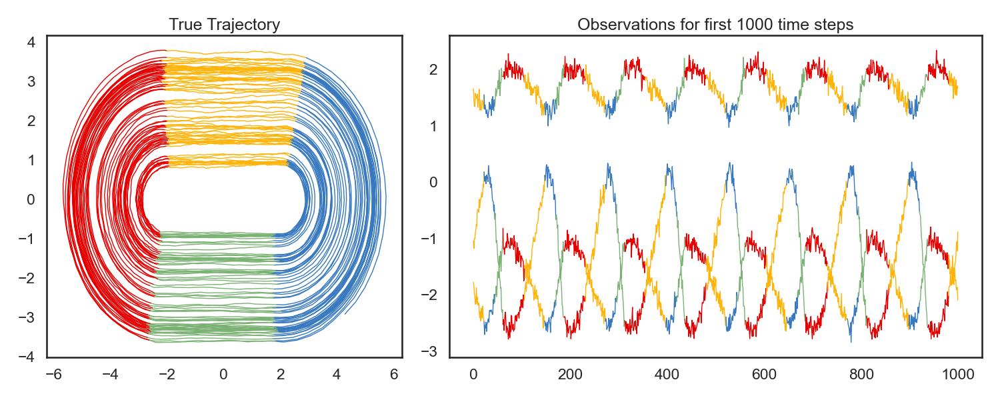
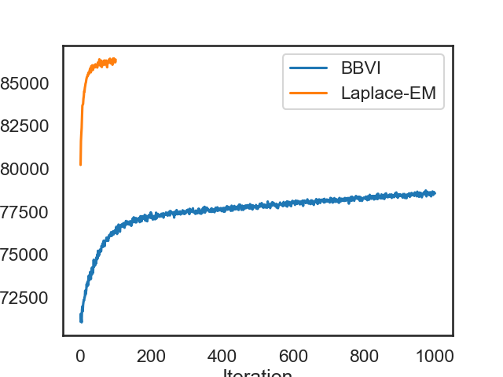
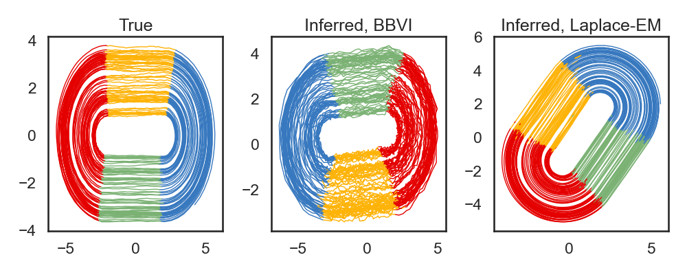
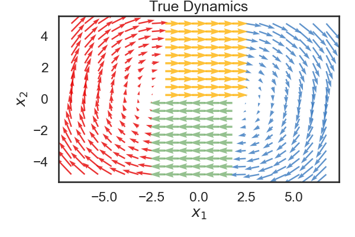
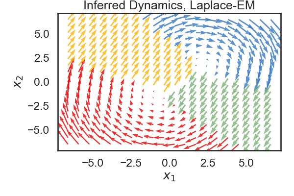
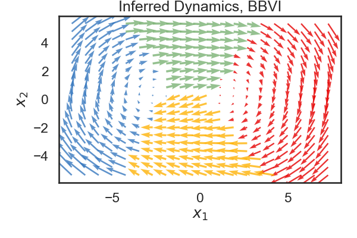

Recurrent SLDS
Note
Click here to download the full example code
Recurrent SLDS#
- 
- 
- 
- 
- 
- 
0%| | 0/100 [00:00<?, ?it/s]
ELBO: 3267.3: 0%| | 0/100 [00:00<?, ?it/s]
ELBO: 80233.0: 0%| | 0/100 [00:01<?, ?it/s]
ELBO: 80233.0: 1%|1 | 1/100 [00:01<02:22, 1.44s/it]
ELBO: 81626.6: 1%|1 | 1/100 [00:03<02:22, 1.44s/it]
ELBO: 81626.6: 2%|2 | 2/100 [00:03<02:30, 1.53s/it]
ELBO: 82043.2: 2%|2 | 2/100 [00:04<02:30, 1.53s/it]
ELBO: 82043.2: 3%|3 | 3/100 [00:04<02:21, 1.45s/it]
ELBO: 82386.6: 3%|3 | 3/100 [00:05<02:21, 1.45s/it]
ELBO: 82386.6: 4%|4 | 4/100 [00:05<02:22, 1.48s/it]
ELBO: 83031.0: 4%|4 | 4/100 [00:07<02:22, 1.48s/it]
ELBO: 83031.0: 5%|5 | 5/100 [00:07<02:16, 1.44s/it]
ELBO: 83683.2: 5%|5 | 5/100 [00:08<02:16, 1.44s/it]
ELBO: 83683.2: 6%|6 | 6/100 [00:08<02:16, 1.46s/it]
ELBO: 83744.9: 6%|6 | 6/100 [00:10<02:16, 1.46s/it]
ELBO: 83744.9: 7%|7 | 7/100 [00:10<02:14, 1.45s/it]
ELBO: 83786.7: 7%|7 | 7/100 [00:11<02:14, 1.45s/it]
ELBO: 83786.7: 8%|8 | 8/100 [00:11<02:09, 1.41s/it]
ELBO: 84093.7: 8%|8 | 8/100 [00:12<02:09, 1.41s/it]
ELBO: 84093.7: 9%|9 | 9/100 [00:12<02:07, 1.40s/it]
ELBO: 84241.4: 9%|9 | 9/100 [00:14<02:07, 1.40s/it]
ELBO: 84241.4: 10%|# | 10/100 [00:14<02:02, 1.36s/it]
ELBO: 84535.5: 10%|# | 10/100 [00:15<02:02, 1.36s/it]
ELBO: 84535.5: 11%|#1 | 11/100 [00:15<02:04, 1.40s/it]
ELBO: 84520.5: 11%|#1 | 11/100 [00:17<02:04, 1.40s/it]
ELBO: 84520.5: 12%|#2 | 12/100 [00:17<02:02, 1.39s/it]
ELBO: 84728.5: 12%|#2 | 12/100 [00:18<02:02, 1.39s/it]
ELBO: 84728.5: 13%|#3 | 13/100 [00:18<02:01, 1.39s/it]
ELBO: 84842.5: 13%|#3 | 13/100 [00:19<02:01, 1.39s/it]
ELBO: 84842.5: 14%|#4 | 14/100 [00:19<01:57, 1.36s/it]
ELBO: 84987.2: 14%|#4 | 14/100 [00:21<01:57, 1.36s/it]
ELBO: 84987.2: 15%|#5 | 15/100 [00:21<02:00, 1.42s/it]
ELBO: 85044.1: 15%|#5 | 15/100 [00:22<02:00, 1.42s/it]
ELBO: 85044.1: 16%|#6 | 16/100 [00:22<01:59, 1.42s/it]
ELBO: 85193.3: 16%|#6 | 16/100 [00:23<01:59, 1.42s/it]
ELBO: 85193.3: 17%|#7 | 17/100 [00:23<01:53, 1.36s/it]
ELBO: 85295.2: 17%|#7 | 17/100 [00:25<01:53, 1.36s/it]
ELBO: 85295.2: 18%|#8 | 18/100 [00:25<01:52, 1.38s/it]
ELBO: 85366.7: 18%|#8 | 18/100 [00:26<01:52, 1.38s/it]
ELBO: 85366.7: 19%|#9 | 19/100 [00:26<01:50, 1.37s/it]
ELBO: 85390.6: 19%|#9 | 19/100 [00:27<01:50, 1.37s/it]
ELBO: 85390.6: 20%|## | 20/100 [00:27<01:47, 1.34s/it]
ELBO: 85477.2: 20%|## | 20/100 [00:29<01:47, 1.34s/it]
ELBO: 85477.2: 21%|##1 | 21/100 [00:29<01:49, 1.39s/it]
ELBO: 85463.3: 21%|##1 | 21/100 [00:30<01:49, 1.39s/it]
ELBO: 85463.3: 22%|##2 | 22/100 [00:30<01:49, 1.41s/it]
ELBO: 85618.1: 22%|##2 | 22/100 [00:32<01:49, 1.41s/it]
ELBO: 85618.1: 23%|##3 | 23/100 [00:32<01:45, 1.38s/it]
ELBO: 85572.4: 23%|##3 | 23/100 [00:33<01:45, 1.38s/it]
ELBO: 85572.4: 24%|##4 | 24/100 [00:33<01:47, 1.42s/it]
ELBO: 85556.8: 24%|##4 | 24/100 [00:35<01:47, 1.42s/it]
ELBO: 85556.8: 25%|##5 | 25/100 [00:35<01:45, 1.41s/it]
ELBO: 85704.4: 25%|##5 | 25/100 [00:36<01:45, 1.41s/it]
ELBO: 85704.4: 26%|##6 | 26/100 [00:36<01:43, 1.40s/it]
ELBO: 85776.1: 26%|##6 | 26/100 [00:37<01:43, 1.40s/it]
ELBO: 85776.1: 27%|##7 | 27/100 [00:37<01:42, 1.40s/it]
ELBO: 85861.7: 27%|##7 | 27/100 [00:39<01:42, 1.40s/it]
ELBO: 85861.7: 28%|##8 | 28/100 [00:39<01:39, 1.38s/it]
ELBO: 85850.6: 28%|##8 | 28/100 [00:40<01:39, 1.38s/it]
ELBO: 85850.6: 29%|##9 | 29/100 [00:40<01:39, 1.40s/it]
ELBO: 85636.3: 29%|##9 | 29/100 [00:41<01:39, 1.40s/it]
ELBO: 85636.3: 30%|### | 30/100 [00:41<01:31, 1.30s/it]
ELBO: 85991.1: 30%|### | 30/100 [00:43<01:31, 1.30s/it]
ELBO: 85991.1: 31%|###1 | 31/100 [00:43<01:30, 1.31s/it]
ELBO: 85959.5: 31%|###1 | 31/100 [00:44<01:30, 1.31s/it]
ELBO: 85959.5: 32%|###2 | 32/100 [00:44<01:33, 1.37s/it]
ELBO: 85780.2: 32%|###2 | 32/100 [00:45<01:33, 1.37s/it]
ELBO: 85780.2: 33%|###3 | 33/100 [00:45<01:31, 1.37s/it]
ELBO: 86047.7: 33%|###3 | 33/100 [00:47<01:31, 1.37s/it]
ELBO: 86047.7: 34%|###4 | 34/100 [00:47<01:33, 1.41s/it]
ELBO: 85939.9: 34%|###4 | 34/100 [00:48<01:33, 1.41s/it]
ELBO: 85939.9: 35%|###5 | 35/100 [00:48<01:28, 1.37s/it]
ELBO: 85778.3: 35%|###5 | 35/100 [00:50<01:28, 1.37s/it]
ELBO: 85778.3: 36%|###6 | 36/100 [00:50<01:28, 1.38s/it]
ELBO: 85973.2: 36%|###6 | 36/100 [00:51<01:28, 1.38s/it]
ELBO: 85973.2: 37%|###7 | 37/100 [00:51<01:24, 1.34s/it]
ELBO: 86046.8: 37%|###7 | 37/100 [00:52<01:24, 1.34s/it]
ELBO: 86046.8: 38%|###8 | 38/100 [00:52<01:25, 1.38s/it]
ELBO: 86040.2: 38%|###8 | 38/100 [00:54<01:25, 1.38s/it]
ELBO: 86040.2: 39%|###9 | 39/100 [00:54<01:24, 1.39s/it]
ELBO: 85934.7: 39%|###9 | 39/100 [00:55<01:24, 1.39s/it]
ELBO: 85934.7: 40%|#### | 40/100 [00:55<01:23, 1.39s/it]
ELBO: 85921.3: 40%|#### | 40/100 [00:57<01:23, 1.39s/it]
ELBO: 85921.3: 41%|####1 | 41/100 [00:57<01:21, 1.38s/it]
ELBO: 85940.6: 41%|####1 | 41/100 [00:58<01:21, 1.38s/it]
ELBO: 85940.6: 42%|####2 | 42/100 [00:58<01:22, 1.43s/it]
ELBO: 86106.7: 42%|####2 | 42/100 [00:59<01:22, 1.43s/it]
ELBO: 86106.7: 43%|####3 | 43/100 [00:59<01:20, 1.40s/it]
ELBO: 86002.3: 43%|####3 | 43/100 [01:01<01:20, 1.40s/it]
ELBO: 86002.3: 44%|####4 | 44/100 [01:01<01:18, 1.40s/it]
ELBO: 86052.3: 44%|####4 | 44/100 [01:02<01:18, 1.40s/it]
ELBO: 86052.3: 45%|####5 | 45/100 [01:02<01:15, 1.37s/it]
ELBO: 86062.2: 45%|####5 | 45/100 [01:04<01:15, 1.37s/it]
ELBO: 86062.2: 46%|####6 | 46/100 [01:04<01:14, 1.38s/it]
ELBO: 86083.8: 46%|####6 | 46/100 [01:05<01:14, 1.38s/it]
ELBO: 86083.8: 47%|####6 | 47/100 [01:05<01:13, 1.38s/it]
ELBO: 85914.6: 47%|####6 | 47/100 [01:06<01:13, 1.38s/it]
ELBO: 85914.6: 48%|####8 | 48/100 [01:06<01:12, 1.39s/it]
ELBO: 86082.0: 48%|####8 | 48/100 [01:08<01:12, 1.39s/it]
ELBO: 86082.0: 49%|####9 | 49/100 [01:08<01:10, 1.39s/it]
ELBO: 86213.6: 49%|####9 | 49/100 [01:09<01:10, 1.39s/it]
ELBO: 86213.6: 50%|##### | 50/100 [01:09<01:09, 1.39s/it]
ELBO: 86066.8: 50%|##### | 50/100 [01:10<01:09, 1.39s/it]
ELBO: 86066.8: 51%|#####1 | 51/100 [01:10<01:06, 1.35s/it]
ELBO: 86167.4: 51%|#####1 | 51/100 [01:12<01:06, 1.35s/it]
ELBO: 86167.4: 52%|#####2 | 52/100 [01:12<01:05, 1.35s/it]
ELBO: 86252.0: 52%|#####2 | 52/100 [01:13<01:05, 1.35s/it]
ELBO: 86252.0: 53%|#####3 | 53/100 [01:13<01:05, 1.40s/it]
ELBO: 86397.8: 53%|#####3 | 53/100 [01:15<01:05, 1.40s/it]
ELBO: 86397.8: 54%|#####4 | 54/100 [01:15<01:05, 1.42s/it]
ELBO: 86081.4: 54%|#####4 | 54/100 [01:16<01:05, 1.42s/it]
ELBO: 86081.4: 55%|#####5 | 55/100 [01:16<01:03, 1.41s/it]
ELBO: 86243.6: 55%|#####5 | 55/100 [01:18<01:03, 1.41s/it]
ELBO: 86243.6: 56%|#####6 | 56/100 [01:18<01:02, 1.42s/it]
ELBO: 86012.2: 56%|#####6 | 56/100 [01:19<01:02, 1.42s/it]
ELBO: 86012.2: 57%|#####6 | 57/100 [01:19<01:00, 1.41s/it]
ELBO: 86151.8: 57%|#####6 | 57/100 [01:20<01:00, 1.41s/it]
ELBO: 86151.8: 58%|#####8 | 58/100 [01:20<00:56, 1.35s/it]
ELBO: 86326.7: 58%|#####8 | 58/100 [01:22<00:56, 1.35s/it]
ELBO: 86326.7: 59%|#####8 | 59/100 [01:22<00:56, 1.37s/it]
ELBO: 86202.8: 59%|#####8 | 59/100 [01:23<00:56, 1.37s/it]
ELBO: 86202.8: 60%|###### | 60/100 [01:23<00:56, 1.42s/it]
ELBO: 85945.5: 60%|###### | 60/100 [01:24<00:56, 1.42s/it]
ELBO: 85945.5: 61%|######1 | 61/100 [01:24<00:54, 1.39s/it]
ELBO: 86117.2: 61%|######1 | 61/100 [01:26<00:54, 1.39s/it]
ELBO: 86117.2: 62%|######2 | 62/100 [01:26<00:53, 1.40s/it]
ELBO: 86085.0: 62%|######2 | 62/100 [01:27<00:53, 1.40s/it]
ELBO: 86085.0: 63%|######3 | 63/100 [01:27<00:52, 1.41s/it]
ELBO: 86082.7: 63%|######3 | 63/100 [01:28<00:52, 1.41s/it]
ELBO: 86082.7: 64%|######4 | 64/100 [01:28<00:48, 1.35s/it]
ELBO: 86162.2: 64%|######4 | 64/100 [01:30<00:48, 1.35s/it]
ELBO: 86162.2: 65%|######5 | 65/100 [01:30<00:47, 1.36s/it]
ELBO: 86298.1: 65%|######5 | 65/100 [01:31<00:47, 1.36s/it]
ELBO: 86298.1: 66%|######6 | 66/100 [01:31<00:46, 1.38s/it]
ELBO: 86286.9: 66%|######6 | 66/100 [01:33<00:46, 1.38s/it]
ELBO: 86286.9: 67%|######7 | 67/100 [01:33<00:44, 1.35s/it]
ELBO: 86330.7: 67%|######7 | 67/100 [01:34<00:44, 1.35s/it]
ELBO: 86330.7: 68%|######8 | 68/100 [01:34<00:42, 1.34s/it]
ELBO: 86078.5: 68%|######8 | 68/100 [01:35<00:42, 1.34s/it]
ELBO: 86078.5: 69%|######9 | 69/100 [01:35<00:42, 1.37s/it]
ELBO: 86226.9: 69%|######9 | 69/100 [01:37<00:42, 1.37s/it]
ELBO: 86226.9: 70%|####### | 70/100 [01:37<00:41, 1.38s/it]
ELBO: 86296.4: 70%|####### | 70/100 [01:38<00:41, 1.38s/it]
ELBO: 86296.4: 71%|#######1 | 71/100 [01:38<00:39, 1.37s/it]
ELBO: 86146.0: 71%|#######1 | 71/100 [01:40<00:39, 1.37s/it]
ELBO: 86146.0: 72%|#######2 | 72/100 [01:40<00:39, 1.41s/it]
ELBO: 86327.4: 72%|#######2 | 72/100 [01:41<00:39, 1.41s/it]
ELBO: 86327.4: 73%|#######3 | 73/100 [01:41<00:37, 1.40s/it]
ELBO: 86275.7: 73%|#######3 | 73/100 [01:42<00:37, 1.40s/it]
ELBO: 86275.7: 74%|#######4 | 74/100 [01:42<00:36, 1.40s/it]
ELBO: 86085.8: 74%|#######4 | 74/100 [01:44<00:36, 1.40s/it]
ELBO: 86085.8: 75%|#######5 | 75/100 [01:44<00:33, 1.36s/it]
ELBO: 85930.5: 75%|#######5 | 75/100 [01:45<00:33, 1.36s/it]
ELBO: 85930.5: 76%|#######6 | 76/100 [01:45<00:33, 1.41s/it]
ELBO: 86278.0: 76%|#######6 | 76/100 [01:46<00:33, 1.41s/it]
ELBO: 86278.0: 77%|#######7 | 77/100 [01:46<00:31, 1.36s/it]
ELBO: 86190.7: 77%|#######7 | 77/100 [01:48<00:31, 1.36s/it]
ELBO: 86190.7: 78%|#######8 | 78/100 [01:48<00:30, 1.37s/it]
ELBO: 86244.1: 78%|#######8 | 78/100 [01:49<00:30, 1.37s/it]
ELBO: 86244.1: 79%|#######9 | 79/100 [01:49<00:28, 1.36s/it]
ELBO: 86195.6: 79%|#######9 | 79/100 [01:50<00:28, 1.36s/it]
ELBO: 86195.6: 80%|######## | 80/100 [01:50<00:27, 1.36s/it]
ELBO: 86373.0: 80%|######## | 80/100 [01:52<00:27, 1.36s/it]
ELBO: 86373.0: 81%|########1 | 81/100 [01:52<00:26, 1.40s/it]
ELBO: 86332.6: 81%|########1 | 81/100 [01:53<00:26, 1.40s/it]
ELBO: 86332.6: 82%|########2 | 82/100 [01:53<00:25, 1.41s/it]
ELBO: 86267.2: 82%|########2 | 82/100 [01:55<00:25, 1.41s/it]
ELBO: 86267.2: 83%|########2 | 83/100 [01:55<00:24, 1.44s/it]
ELBO: 86434.5: 83%|########2 | 83/100 [01:56<00:24, 1.44s/it]
ELBO: 86434.5: 84%|########4 | 84/100 [01:56<00:22, 1.42s/it]
ELBO: 86292.5: 84%|########4 | 84/100 [01:58<00:22, 1.42s/it]
ELBO: 86292.5: 85%|########5 | 85/100 [01:58<00:21, 1.43s/it]
ELBO: 86163.2: 85%|########5 | 85/100 [01:59<00:21, 1.43s/it]
ELBO: 86163.2: 86%|########6 | 86/100 [01:59<00:20, 1.43s/it]
ELBO: 86191.0: 86%|########6 | 86/100 [02:00<00:20, 1.43s/it]
ELBO: 86191.0: 87%|########7 | 87/100 [02:00<00:18, 1.40s/it]
ELBO: 86315.6: 87%|########7 | 87/100 [02:02<00:18, 1.40s/it]
ELBO: 86315.6: 88%|########8 | 88/100 [02:02<00:17, 1.45s/it]
ELBO: 86321.8: 88%|########8 | 88/100 [02:04<00:17, 1.45s/it]
ELBO: 86321.8: 89%|########9 | 89/100 [02:04<00:16, 1.47s/it]
ELBO: 86229.9: 89%|########9 | 89/100 [02:05<00:16, 1.47s/it]
ELBO: 86229.9: 90%|######### | 90/100 [02:05<00:14, 1.49s/it]
ELBO: 86078.8: 90%|######### | 90/100 [02:06<00:14, 1.49s/it]
ELBO: 86078.8: 91%|#########1| 91/100 [02:06<00:12, 1.37s/it]
ELBO: 86421.2: 91%|#########1| 91/100 [02:08<00:12, 1.37s/it]
ELBO: 86421.2: 92%|#########2| 92/100 [02:08<00:10, 1.36s/it]
ELBO: 86209.0: 92%|#########2| 92/100 [02:09<00:10, 1.36s/it]
ELBO: 86209.0: 93%|#########3| 93/100 [02:09<00:09, 1.42s/it]
ELBO: 86448.2: 93%|#########3| 93/100 [02:10<00:09, 1.42s/it]
ELBO: 86448.2: 94%|#########3| 94/100 [02:10<00:08, 1.35s/it]
ELBO: 86236.9: 94%|#########3| 94/100 [02:12<00:08, 1.35s/it]
ELBO: 86236.9: 95%|#########5| 95/100 [02:12<00:06, 1.38s/it]
ELBO: 86427.5: 95%|#########5| 95/100 [02:13<00:06, 1.38s/it]
ELBO: 86427.5: 96%|#########6| 96/100 [02:13<00:05, 1.41s/it]
ELBO: 86352.0: 96%|#########6| 96/100 [02:15<00:05, 1.41s/it]
ELBO: 86352.0: 97%|#########7| 97/100 [02:15<00:04, 1.39s/it]
ELBO: 86355.1: 97%|#########7| 97/100 [02:16<00:04, 1.39s/it]
ELBO: 86355.1: 98%|#########8| 98/100 [02:16<00:02, 1.40s/it]
ELBO: 86221.7: 98%|#########8| 98/100 [02:17<00:02, 1.40s/it]
ELBO: 86221.7: 99%|#########9| 99/100 [02:17<00:01, 1.42s/it]
ELBO: 86377.1: 99%|#########9| 99/100 [02:19<00:01, 1.42s/it]
ELBO: 86377.1: 100%|##########| 100/100 [02:19<00:00, 1.40s/it]
ELBO: 86377.1: 100%|##########| 100/100 [02:19<00:00, 1.39s/it]
0%| | 0/1000 [00:00<?, ?it/s]
LP: 71078.0: 0%| | 0/1000 [00:00<?, ?it/s]
ELBO: 71547.5: 0%| | 0/1000 [00:00<?, ?it/s]
ELBO: 71250.0: 0%| | 1/1000 [00:00<02:51, 5.83it/s]
ELBO: 71250.0: 0%| | 2/1000 [00:00<01:25, 11.66it/s]
ELBO: 71039.0: 0%| | 4/1000 [00:00<01:25, 11.66it/s]
ELBO: 71781.7: 0%| | 5/1000 [00:00<01:25, 11.66it/s]
ELBO: 71781.7: 1%| | 6/1000 [00:00<00:52, 18.99it/s]
ELBO: 71972.3: 1%| | 8/1000 [00:00<00:52, 18.99it/s]
ELBO: 71683.4: 1%| | 9/1000 [00:00<00:52, 18.99it/s]
ELBO: 71683.4: 1%|1 | 10/1000 [00:00<00:46, 21.45it/s]
ELBO: 72045.8: 1%|1 | 10/1000 [00:00<00:46, 21.45it/s]
ELBO: 72219.1: 1%|1 | 11/1000 [00:00<00:46, 21.45it/s]
ELBO: 72330.5: 1%|1 | 12/1000 [00:00<00:46, 21.45it/s]
ELBO: 72330.5: 1%|1 | 13/1000 [00:00<00:58, 16.89it/s]
ELBO: 72317.3: 2%|1 | 16/1000 [00:00<00:58, 16.89it/s]
ELBO: 72317.3: 2%|1 | 17/1000 [00:00<00:49, 19.75it/s]
ELBO: 72503.2: 2%|1 | 17/1000 [00:00<00:49, 19.75it/s]
ELBO: 72526.3: 2%|1 | 18/1000 [00:01<00:49, 19.75it/s]
ELBO: 72893.4: 2%|1 | 19/1000 [00:01<00:49, 19.75it/s]
ELBO: 72893.4: 2%|2 | 20/1000 [00:01<00:59, 16.41it/s]
ELBO: 72663.2: 2%|2 | 20/1000 [00:01<00:59, 16.41it/s]
ELBO: 72779.7: 2%|2 | 21/1000 [00:01<00:59, 16.41it/s]
ELBO: 72779.7: 2%|2 | 22/1000 [00:01<01:05, 15.04it/s]
ELBO: 72912.0: 2%|2 | 24/1000 [00:01<01:04, 15.04it/s]
ELBO: 73258.1: 2%|2 | 25/1000 [00:01<01:04, 15.04it/s]
ELBO: 73258.1: 3%|2 | 26/1000 [00:01<00:55, 17.60it/s]
ELBO: 73150.7: 3%|2 | 26/1000 [00:01<00:55, 17.60it/s]
ELBO: 73368.2: 3%|2 | 27/1000 [00:01<00:55, 17.60it/s]
ELBO: 73368.2: 3%|2 | 28/1000 [00:01<01:01, 15.68it/s]
ELBO: 73409.2: 3%|2 | 28/1000 [00:01<01:01, 15.68it/s]
ELBO: 73197.4: 3%|2 | 29/1000 [00:01<01:01, 15.68it/s]
ELBO: 73197.4: 3%|3 | 30/1000 [00:01<01:06, 14.53it/s]
ELBO: 73576.5: 3%|3 | 30/1000 [00:01<01:06, 14.53it/s]
ELBO: 73760.9: 3%|3 | 31/1000 [00:02<01:06, 14.53it/s]
ELBO: 73760.9: 3%|3 | 32/1000 [00:02<01:10, 13.79it/s]
ELBO: 73475.2: 3%|3 | 32/1000 [00:02<01:10, 13.79it/s]
ELBO: 73563.9: 4%|3 | 35/1000 [00:02<01:09, 13.79it/s]
ELBO: 73563.9: 4%|3 | 36/1000 [00:02<00:57, 16.86it/s]
ELBO: 73790.9: 4%|3 | 36/1000 [00:02<00:57, 16.86it/s]
ELBO: 73980.9: 4%|3 | 37/1000 [00:02<00:57, 16.86it/s]
ELBO: 73980.9: 4%|3 | 38/1000 [00:02<01:02, 15.44it/s]
ELBO: 73848.1: 4%|3 | 38/1000 [00:02<01:02, 15.44it/s]
ELBO: 73564.6: 4%|3 | 39/1000 [00:02<01:02, 15.44it/s]
ELBO: 73564.6: 4%|4 | 40/1000 [00:02<01:06, 14.45it/s]
ELBO: 73897.7: 4%|4 | 40/1000 [00:02<01:06, 14.45it/s]
ELBO: 74108.5: 4%|4 | 41/1000 [00:02<01:06, 14.45it/s]
ELBO: 74108.5: 4%|4 | 42/1000 [00:02<01:10, 13.56it/s]
ELBO: 74232.9: 4%|4 | 42/1000 [00:02<01:10, 13.56it/s]
ELBO: 73858.2: 4%|4 | 43/1000 [00:02<01:10, 13.56it/s]
ELBO: 73858.2: 4%|4 | 44/1000 [00:02<01:11, 13.34it/s]
ELBO: 74227.9: 4%|4 | 44/1000 [00:02<01:11, 13.34it/s]
ELBO: 73932.9: 5%|4 | 47/1000 [00:03<01:11, 13.34it/s]
ELBO: 73932.9: 5%|4 | 48/1000 [00:03<00:58, 16.34it/s]
ELBO: 74316.3: 5%|4 | 48/1000 [00:03<00:58, 16.34it/s]
ELBO: 74690.5: 5%|4 | 49/1000 [00:03<00:58, 16.34it/s]
ELBO: 74690.5: 5%|5 | 50/1000 [00:03<01:02, 15.09it/s]
ELBO: 74285.9: 5%|5 | 50/1000 [00:03<01:02, 15.09it/s]
ELBO: 74608.3: 5%|5 | 51/1000 [00:03<01:02, 15.09it/s]
ELBO: 74608.3: 5%|5 | 52/1000 [00:03<01:07, 13.96it/s]
ELBO: 74505.4: 5%|5 | 52/1000 [00:03<01:07, 13.96it/s]
ELBO: 74371.4: 5%|5 | 53/1000 [00:03<01:07, 13.96it/s]
ELBO: 74371.4: 5%|5 | 54/1000 [00:03<01:11, 13.27it/s]
ELBO: 74691.6: 5%|5 | 54/1000 [00:03<01:11, 13.27it/s]
ELBO: 74461.1: 6%|5 | 55/1000 [00:03<01:11, 13.27it/s]
ELBO: 74461.1: 6%|5 | 56/1000 [00:03<01:13, 12.88it/s]
ELBO: 74517.1: 6%|5 | 56/1000 [00:03<01:13, 12.88it/s]
ELBO: 74840.1: 6%|5 | 57/1000 [00:03<01:13, 12.88it/s]
ELBO: 74840.1: 6%|5 | 58/1000 [00:03<01:15, 12.41it/s]
ELBO: 74711.8: 6%|5 | 58/1000 [00:03<01:15, 12.41it/s]
ELBO: 74997.8: 6%|6 | 61/1000 [00:04<01:15, 12.41it/s]
ELBO: 74997.8: 6%|6 | 62/1000 [00:04<01:00, 15.53it/s]
ELBO: 74760.8: 6%|6 | 62/1000 [00:04<01:00, 15.53it/s]
ELBO: 75216.8: 6%|6 | 63/1000 [00:04<01:00, 15.53it/s]
ELBO: 75216.8: 6%|6 | 64/1000 [00:04<01:05, 14.31it/s]
ELBO: 75117.0: 6%|6 | 64/1000 [00:04<01:05, 14.31it/s]
ELBO: 74913.9: 6%|6 | 65/1000 [00:04<01:05, 14.31it/s]
ELBO: 74913.9: 7%|6 | 66/1000 [00:04<01:08, 13.67it/s]
ELBO: 75141.3: 7%|6 | 66/1000 [00:04<01:08, 13.67it/s]
ELBO: 74994.2: 7%|6 | 67/1000 [00:04<01:08, 13.67it/s]
ELBO: 74994.2: 7%|6 | 68/1000 [00:04<01:11, 13.00it/s]
ELBO: 75245.1: 7%|6 | 68/1000 [00:04<01:11, 13.00it/s]
ELBO: 75290.0: 7%|6 | 69/1000 [00:04<01:11, 13.00it/s]
ELBO: 75290.0: 7%|7 | 70/1000 [00:04<01:13, 12.62it/s]
ELBO: 75164.7: 7%|7 | 70/1000 [00:04<01:13, 12.62it/s]
ELBO: 75204.1: 7%|7 | 71/1000 [00:04<01:13, 12.62it/s]
ELBO: 75204.1: 7%|7 | 72/1000 [00:04<01:14, 12.38it/s]
ELBO: 75198.9: 7%|7 | 72/1000 [00:04<01:14, 12.38it/s]
ELBO: 75500.3: 7%|7 | 73/1000 [00:05<01:14, 12.38it/s]
ELBO: 75500.3: 7%|7 | 74/1000 [00:05<01:16, 12.18it/s]
ELBO: 75444.5: 7%|7 | 74/1000 [00:05<01:16, 12.18it/s]
ELBO: 75437.1: 8%|7 | 77/1000 [00:05<01:15, 12.18it/s]
ELBO: 75437.1: 8%|7 | 78/1000 [00:05<00:58, 15.64it/s]
ELBO: 75633.6: 8%|7 | 78/1000 [00:05<00:58, 15.64it/s]
ELBO: 75446.3: 8%|7 | 79/1000 [00:05<00:58, 15.64it/s]
ELBO: 75446.3: 8%|8 | 80/1000 [00:05<01:03, 14.60it/s]
ELBO: 75700.9: 8%|8 | 80/1000 [00:05<01:03, 14.60it/s]
ELBO: 75806.1: 8%|8 | 81/1000 [00:05<01:02, 14.60it/s]
ELBO: 75806.1: 8%|8 | 82/1000 [00:05<01:06, 13.81it/s]
ELBO: 75788.0: 8%|8 | 82/1000 [00:05<01:06, 13.81it/s]
ELBO: 75495.4: 8%|8 | 83/1000 [00:05<01:06, 13.81it/s]
ELBO: 75495.4: 8%|8 | 84/1000 [00:05<01:09, 13.12it/s]
ELBO: 75492.7: 8%|8 | 84/1000 [00:05<01:09, 13.12it/s]
ELBO: 75779.1: 8%|8 | 85/1000 [00:05<01:09, 13.12it/s]
ELBO: 75779.1: 9%|8 | 86/1000 [00:05<01:11, 12.73it/s]
ELBO: 75794.9: 9%|8 | 86/1000 [00:05<01:11, 12.73it/s]
ELBO: 75788.8: 9%|8 | 87/1000 [00:06<01:11, 12.73it/s]
ELBO: 75788.8: 9%|8 | 88/1000 [00:06<01:13, 12.47it/s]
ELBO: 75829.0: 9%|8 | 88/1000 [00:06<01:13, 12.47it/s]
ELBO: 75983.1: 9%|8 | 89/1000 [00:06<01:13, 12.47it/s]
ELBO: 75983.1: 9%|9 | 90/1000 [00:06<01:14, 12.18it/s]
ELBO: 75833.8: 9%|9 | 90/1000 [00:06<01:14, 12.18it/s]
ELBO: 75868.0: 9%|9 | 91/1000 [00:06<01:14, 12.18it/s]
ELBO: 75868.0: 9%|9 | 92/1000 [00:06<01:15, 12.00it/s]
ELBO: 75800.1: 9%|9 | 92/1000 [00:06<01:15, 12.00it/s]
ELBO: 75917.3: 10%|9 | 95/1000 [00:06<01:15, 12.00it/s]
ELBO: 75917.3: 10%|9 | 96/1000 [00:06<00:58, 15.58it/s]
ELBO: 75805.2: 10%|9 | 96/1000 [00:06<00:58, 15.58it/s]
ELBO: 76052.3: 10%|9 | 97/1000 [00:06<00:57, 15.58it/s]
ELBO: 76052.3: 10%|9 | 98/1000 [00:06<01:02, 14.33it/s]
ELBO: 75991.2: 10%|9 | 98/1000 [00:06<01:02, 14.33it/s]
ELBO: 76142.6: 10%|9 | 99/1000 [00:06<01:02, 14.33it/s]
ELBO: 76142.6: 10%|# | 100/1000 [00:06<01:06, 13.61it/s]
ELBO: 76131.8: 10%|# | 100/1000 [00:07<01:06, 13.61it/s]
ELBO: 76074.4: 10%|# | 101/1000 [00:07<01:06, 13.61it/s]
ELBO: 76074.4: 10%|# | 102/1000 [00:07<01:08, 13.10it/s]
ELBO: 76077.7: 10%|# | 102/1000 [00:07<01:08, 13.10it/s]
ELBO: 76188.2: 10%|# | 103/1000 [00:07<01:08, 13.10it/s]
ELBO: 76188.2: 10%|# | 104/1000 [00:07<01:10, 12.78it/s]
ELBO: 76302.5: 10%|# | 104/1000 [00:07<01:10, 12.78it/s]
ELBO: 76224.3: 10%|# | 105/1000 [00:07<01:10, 12.78it/s]
ELBO: 76224.3: 11%|# | 106/1000 [00:07<01:11, 12.50it/s]
ELBO: 76089.3: 11%|# | 106/1000 [00:07<01:11, 12.50it/s]
ELBO: 76130.6: 11%|# | 107/1000 [00:07<01:11, 12.50it/s]
ELBO: 76130.6: 11%|# | 108/1000 [00:07<01:12, 12.28it/s]
ELBO: 76254.7: 11%|# | 108/1000 [00:07<01:12, 12.28it/s]
ELBO: 76337.1: 11%|# | 109/1000 [00:07<01:12, 12.28it/s]
ELBO: 76337.1: 11%|#1 | 110/1000 [00:07<01:12, 12.35it/s]
ELBO: 76177.5: 11%|#1 | 110/1000 [00:07<01:12, 12.35it/s]
ELBO: 76169.3: 11%|#1 | 111/1000 [00:07<01:11, 12.35it/s]
ELBO: 76169.3: 11%|#1 | 112/1000 [00:07<01:13, 12.13it/s]
ELBO: 76369.1: 11%|#1 | 112/1000 [00:08<01:13, 12.13it/s]
ELBO: 76238.6: 12%|#1 | 115/1000 [00:08<01:12, 12.13it/s]
ELBO: 76238.6: 12%|#1 | 116/1000 [00:08<00:56, 15.72it/s]
ELBO: 76263.0: 12%|#1 | 116/1000 [00:08<00:56, 15.72it/s]
ELBO: 76385.4: 12%|#1 | 117/1000 [00:08<00:56, 15.72it/s]
ELBO: 76385.4: 12%|#1 | 118/1000 [00:08<01:00, 14.58it/s]
ELBO: 76436.2: 12%|#1 | 118/1000 [00:08<01:00, 14.58it/s]
ELBO: 76404.9: 12%|#1 | 119/1000 [00:08<01:00, 14.58it/s]
ELBO: 76404.9: 12%|#2 | 120/1000 [00:08<01:03, 13.76it/s]
ELBO: 76423.4: 12%|#2 | 120/1000 [00:08<01:03, 13.76it/s]
ELBO: 76625.8: 12%|#2 | 121/1000 [00:08<01:03, 13.76it/s]
ELBO: 76625.8: 12%|#2 | 122/1000 [00:08<01:14, 11.86it/s]
ELBO: 76384.4: 12%|#2 | 122/1000 [00:08<01:14, 11.86it/s]
ELBO: 76200.2: 12%|#2 | 123/1000 [00:08<01:13, 11.86it/s]
ELBO: 76200.2: 12%|#2 | 124/1000 [00:08<01:16, 11.48it/s]
ELBO: 76293.3: 12%|#2 | 124/1000 [00:08<01:16, 11.48it/s]
ELBO: 76500.6: 12%|#2 | 125/1000 [00:09<01:16, 11.48it/s]
ELBO: 76500.6: 13%|#2 | 126/1000 [00:09<01:15, 11.62it/s]
ELBO: 76451.1: 13%|#2 | 126/1000 [00:09<01:15, 11.62it/s]
ELBO: 76749.0: 13%|#2 | 127/1000 [00:09<01:15, 11.62it/s]
ELBO: 76749.0: 13%|#2 | 128/1000 [00:09<01:14, 11.67it/s]
ELBO: 76536.2: 13%|#2 | 128/1000 [00:09<01:14, 11.67it/s]
ELBO: 76703.5: 13%|#2 | 129/1000 [00:09<01:14, 11.67it/s]
ELBO: 76703.5: 13%|#3 | 130/1000 [00:09<01:14, 11.69it/s]
ELBO: 76634.0: 13%|#3 | 130/1000 [00:09<01:14, 11.69it/s]
ELBO: 76327.1: 13%|#3 | 131/1000 [00:09<01:14, 11.69it/s]
ELBO: 76327.1: 13%|#3 | 132/1000 [00:09<01:13, 11.80it/s]
ELBO: 76570.2: 13%|#3 | 132/1000 [00:09<01:13, 11.80it/s]
ELBO: 76700.1: 13%|#3 | 133/1000 [00:09<01:13, 11.80it/s]
ELBO: 76700.1: 13%|#3 | 134/1000 [00:09<01:14, 11.65it/s]
ELBO: 76637.3: 13%|#3 | 134/1000 [00:09<01:14, 11.65it/s]
ELBO: 76675.0: 14%|#3 | 137/1000 [00:09<01:14, 11.65it/s]
ELBO: 76675.0: 14%|#3 | 138/1000 [00:09<00:57, 14.90it/s]
ELBO: 76756.3: 14%|#3 | 138/1000 [00:09<00:57, 14.90it/s]
ELBO: 76619.1: 14%|#3 | 139/1000 [00:10<00:57, 14.90it/s]
ELBO: 76619.1: 14%|#4 | 140/1000 [00:10<01:02, 13.84it/s]
ELBO: 76692.6: 14%|#4 | 140/1000 [00:10<01:02, 13.84it/s]
ELBO: 76779.9: 14%|#4 | 141/1000 [00:10<01:02, 13.84it/s]
ELBO: 76779.9: 14%|#4 | 142/1000 [00:10<01:05, 13.10it/s]
ELBO: 76642.4: 14%|#4 | 142/1000 [00:10<01:05, 13.10it/s]
ELBO: 76834.5: 14%|#4 | 143/1000 [00:10<01:05, 13.10it/s]
ELBO: 76834.5: 14%|#4 | 144/1000 [00:10<01:06, 12.82it/s]
ELBO: 76677.6: 14%|#4 | 144/1000 [00:10<01:06, 12.82it/s]
ELBO: 76584.0: 14%|#4 | 145/1000 [00:10<01:06, 12.82it/s]
ELBO: 76584.0: 15%|#4 | 146/1000 [00:10<01:08, 12.52it/s]
ELBO: 76562.8: 15%|#4 | 146/1000 [00:10<01:08, 12.52it/s]
ELBO: 76823.0: 15%|#4 | 147/1000 [00:10<01:08, 12.52it/s]
ELBO: 76823.0: 15%|#4 | 148/1000 [00:10<01:11, 11.86it/s]
ELBO: 76695.6: 15%|#4 | 148/1000 [00:10<01:11, 11.86it/s]
ELBO: 76808.3: 15%|#4 | 149/1000 [00:10<01:11, 11.86it/s]
ELBO: 76808.3: 15%|#5 | 150/1000 [00:10<01:12, 11.75it/s]
ELBO: 76959.7: 15%|#5 | 150/1000 [00:11<01:12, 11.75it/s]
ELBO: 76836.1: 15%|#5 | 151/1000 [00:11<01:12, 11.75it/s]
ELBO: 76836.1: 15%|#5 | 152/1000 [00:11<01:12, 11.77it/s]
ELBO: 76779.5: 15%|#5 | 152/1000 [00:11<01:12, 11.77it/s]
ELBO: 76893.7: 15%|#5 | 153/1000 [00:11<01:11, 11.77it/s]
ELBO: 76893.7: 15%|#5 | 154/1000 [00:11<01:12, 11.73it/s]
ELBO: 76806.2: 15%|#5 | 154/1000 [00:11<01:12, 11.73it/s]
ELBO: 76925.9: 16%|#5 | 155/1000 [00:11<01:12, 11.73it/s]
ELBO: 76925.9: 16%|#5 | 156/1000 [00:11<01:12, 11.63it/s]
ELBO: 76766.1: 16%|#5 | 156/1000 [00:11<01:12, 11.63it/s]
ELBO: 76809.0: 16%|#5 | 157/1000 [00:11<01:12, 11.63it/s]
ELBO: 76809.0: 16%|#5 | 158/1000 [00:11<01:11, 11.71it/s]
ELBO: 76808.5: 16%|#5 | 158/1000 [00:11<01:11, 11.71it/s]
ELBO: 76748.2: 16%|#6 | 161/1000 [00:11<01:11, 11.71it/s]
ELBO: 76748.2: 16%|#6 | 162/1000 [00:11<00:55, 15.13it/s]
ELBO: 76753.5: 16%|#6 | 162/1000 [00:11<00:55, 15.13it/s]
ELBO: 76754.4: 16%|#6 | 163/1000 [00:11<00:55, 15.13it/s]
ELBO: 76754.4: 16%|#6 | 164/1000 [00:11<00:58, 14.22it/s]
ELBO: 76949.8: 16%|#6 | 164/1000 [00:12<00:58, 14.22it/s]
ELBO: 76894.8: 16%|#6 | 165/1000 [00:12<00:58, 14.22it/s]
ELBO: 76894.8: 17%|#6 | 166/1000 [00:12<01:01, 13.64it/s]
ELBO: 76889.0: 17%|#6 | 166/1000 [00:12<01:01, 13.64it/s]
ELBO: 76674.6: 17%|#6 | 167/1000 [00:12<01:01, 13.64it/s]
ELBO: 76674.6: 17%|#6 | 168/1000 [00:12<01:04, 12.99it/s]
ELBO: 76745.7: 17%|#6 | 168/1000 [00:12<01:04, 12.99it/s]
ELBO: 76815.6: 17%|#6 | 169/1000 [00:12<01:03, 12.99it/s]
ELBO: 76815.6: 17%|#7 | 170/1000 [00:12<01:05, 12.65it/s]
ELBO: 76918.5: 17%|#7 | 170/1000 [00:12<01:05, 12.65it/s]
ELBO: 77099.2: 17%|#7 | 171/1000 [00:12<01:05, 12.65it/s]
ELBO: 77099.2: 17%|#7 | 172/1000 [00:12<01:06, 12.50it/s]
ELBO: 77015.1: 17%|#7 | 172/1000 [00:12<01:06, 12.50it/s]
ELBO: 77032.6: 17%|#7 | 173/1000 [00:12<01:06, 12.50it/s]
ELBO: 77032.6: 17%|#7 | 174/1000 [00:12<01:06, 12.42it/s]
ELBO: 77172.8: 17%|#7 | 174/1000 [00:12<01:06, 12.42it/s]
ELBO: 76905.4: 18%|#7 | 175/1000 [00:12<01:06, 12.42it/s]
ELBO: 76905.4: 18%|#7 | 176/1000 [00:12<01:07, 12.12it/s]
ELBO: 76903.3: 18%|#7 | 176/1000 [00:13<01:07, 12.12it/s]
ELBO: 76978.3: 18%|#7 | 177/1000 [00:13<01:07, 12.12it/s]
ELBO: 76978.3: 18%|#7 | 178/1000 [00:13<01:07, 12.10it/s]
ELBO: 76948.0: 18%|#7 | 178/1000 [00:13<01:07, 12.10it/s]
ELBO: 76873.8: 18%|#7 | 179/1000 [00:13<01:07, 12.10it/s]
ELBO: 76873.8: 18%|#8 | 180/1000 [00:13<01:07, 12.07it/s]
ELBO: 77131.2: 18%|#8 | 180/1000 [00:13<01:07, 12.07it/s]
ELBO: 76923.8: 18%|#8 | 181/1000 [00:13<01:07, 12.07it/s]
ELBO: 76923.8: 18%|#8 | 182/1000 [00:13<01:08, 11.87it/s]
ELBO: 76886.1: 18%|#8 | 182/1000 [00:13<01:08, 11.87it/s]
ELBO: 77078.8: 18%|#8 | 183/1000 [00:13<01:08, 11.87it/s]
ELBO: 77078.8: 18%|#8 | 184/1000 [00:13<01:08, 11.89it/s]
ELBO: 77027.1: 18%|#8 | 184/1000 [00:13<01:08, 11.89it/s]
ELBO: 77087.1: 19%|#8 | 187/1000 [00:13<01:08, 11.89it/s]
ELBO: 77087.1: 19%|#8 | 188/1000 [00:13<00:53, 15.22it/s]
ELBO: 76995.7: 19%|#8 | 188/1000 [00:13<00:53, 15.22it/s]
ELBO: 77057.3: 19%|#8 | 189/1000 [00:13<00:53, 15.22it/s]
ELBO: 77057.3: 19%|#9 | 190/1000 [00:13<00:55, 14.48it/s]
ELBO: 77129.5: 19%|#9 | 190/1000 [00:14<00:55, 14.48it/s]
ELBO: 77037.7: 19%|#9 | 191/1000 [00:14<00:55, 14.48it/s]
ELBO: 77037.7: 19%|#9 | 192/1000 [00:14<00:59, 13.58it/s]
ELBO: 77039.7: 19%|#9 | 192/1000 [00:14<00:59, 13.58it/s]
ELBO: 76889.9: 19%|#9 | 193/1000 [00:14<00:59, 13.58it/s]
ELBO: 76889.9: 19%|#9 | 194/1000 [00:14<01:01, 13.13it/s]
ELBO: 77178.5: 19%|#9 | 194/1000 [00:14<01:01, 13.13it/s]
ELBO: 77235.7: 20%|#9 | 195/1000 [00:14<01:01, 13.13it/s]
ELBO: 77235.7: 20%|#9 | 196/1000 [00:14<01:02, 12.79it/s]
ELBO: 77044.6: 20%|#9 | 196/1000 [00:14<01:02, 12.79it/s]
ELBO: 77082.9: 20%|#9 | 197/1000 [00:14<01:02, 12.79it/s]
ELBO: 77082.9: 20%|#9 | 198/1000 [00:14<01:04, 12.41it/s]
ELBO: 76933.4: 20%|#9 | 198/1000 [00:14<01:04, 12.41it/s]
ELBO: 77147.0: 20%|#9 | 199/1000 [00:14<01:04, 12.41it/s]
ELBO: 77147.0: 20%|## | 200/1000 [00:14<01:05, 12.22it/s]
ELBO: 77238.1: 20%|## | 200/1000 [00:14<01:05, 12.22it/s]
ELBO: 77168.2: 20%|## | 201/1000 [00:14<01:05, 12.22it/s]
ELBO: 77168.2: 20%|## | 202/1000 [00:14<01:06, 11.95it/s]
ELBO: 77085.0: 20%|## | 202/1000 [00:15<01:06, 11.95it/s]
ELBO: 77133.0: 20%|## | 203/1000 [00:15<01:06, 11.95it/s]
ELBO: 77133.0: 20%|## | 204/1000 [00:15<01:06, 11.98it/s]
ELBO: 77169.2: 20%|## | 204/1000 [00:15<01:06, 11.98it/s]
ELBO: 77205.5: 20%|## | 205/1000 [00:15<01:06, 11.98it/s]
ELBO: 77205.5: 21%|## | 206/1000 [00:15<01:06, 11.99it/s]
ELBO: 77066.8: 21%|## | 206/1000 [00:15<01:06, 11.99it/s]
ELBO: 77315.5: 21%|## | 207/1000 [00:15<01:06, 11.99it/s]
ELBO: 77315.5: 21%|## | 208/1000 [00:15<01:09, 11.48it/s]
ELBO: 77027.2: 21%|## | 208/1000 [00:15<01:09, 11.48it/s]
ELBO: 76972.7: 21%|## | 209/1000 [00:15<01:08, 11.48it/s]
ELBO: 76972.7: 21%|##1 | 210/1000 [00:15<01:08, 11.47it/s]
ELBO: 77214.3: 21%|##1 | 210/1000 [00:15<01:08, 11.47it/s]
ELBO: 77000.8: 21%|##1 | 211/1000 [00:15<01:08, 11.47it/s]
ELBO: 77000.8: 21%|##1 | 212/1000 [00:15<01:07, 11.65it/s]
ELBO: 77254.2: 21%|##1 | 212/1000 [00:15<01:07, 11.65it/s]
ELBO: 77166.5: 22%|##1 | 215/1000 [00:16<01:07, 11.65it/s]
ELBO: 77166.5: 22%|##1 | 216/1000 [00:16<00:51, 15.09it/s]
ELBO: 76938.7: 22%|##1 | 216/1000 [00:16<00:51, 15.09it/s]
ELBO: 77092.0: 22%|##1 | 217/1000 [00:16<00:51, 15.09it/s]
ELBO: 77092.0: 22%|##1 | 218/1000 [00:16<00:55, 14.21it/s]
ELBO: 77114.8: 22%|##1 | 218/1000 [00:16<00:55, 14.21it/s]
ELBO: 77179.1: 22%|##1 | 219/1000 [00:16<00:54, 14.21it/s]
ELBO: 77179.1: 22%|##2 | 220/1000 [00:16<00:57, 13.66it/s]
ELBO: 77235.7: 22%|##2 | 220/1000 [00:16<00:57, 13.66it/s]
ELBO: 77306.9: 22%|##2 | 221/1000 [00:16<00:57, 13.66it/s]
ELBO: 77306.9: 22%|##2 | 222/1000 [00:16<00:59, 12.99it/s]
ELBO: 77265.5: 22%|##2 | 222/1000 [00:16<00:59, 12.99it/s]
ELBO: 77266.5: 22%|##2 | 223/1000 [00:16<00:59, 12.99it/s]
ELBO: 77266.5: 22%|##2 | 224/1000 [00:16<01:01, 12.62it/s]
ELBO: 77315.9: 22%|##2 | 224/1000 [00:16<01:01, 12.62it/s]
ELBO: 77137.9: 22%|##2 | 225/1000 [00:16<01:01, 12.62it/s]
ELBO: 77137.9: 23%|##2 | 226/1000 [00:16<01:02, 12.36it/s]
ELBO: 77464.0: 23%|##2 | 226/1000 [00:16<01:02, 12.36it/s]
ELBO: 77200.1: 23%|##2 | 227/1000 [00:17<01:02, 12.36it/s]
ELBO: 77200.1: 23%|##2 | 228/1000 [00:17<01:03, 12.25it/s]
ELBO: 77379.2: 23%|##2 | 228/1000 [00:17<01:03, 12.25it/s]
ELBO: 77197.4: 23%|##2 | 229/1000 [00:17<01:02, 12.25it/s]
ELBO: 77197.4: 23%|##3 | 230/1000 [00:17<01:03, 12.20it/s]
ELBO: 77104.3: 23%|##3 | 230/1000 [00:17<01:03, 12.20it/s]
ELBO: 77216.8: 23%|##3 | 231/1000 [00:17<01:03, 12.20it/s]
ELBO: 77216.8: 23%|##3 | 232/1000 [00:17<01:04, 11.97it/s]
ELBO: 77037.7: 23%|##3 | 232/1000 [00:17<01:04, 11.97it/s]
ELBO: 77231.4: 23%|##3 | 233/1000 [00:17<01:04, 11.97it/s]
ELBO: 77231.4: 23%|##3 | 234/1000 [00:17<01:04, 11.94it/s]
ELBO: 77190.4: 23%|##3 | 234/1000 [00:17<01:04, 11.94it/s]
ELBO: 77203.0: 24%|##3 | 235/1000 [00:17<01:04, 11.94it/s]
ELBO: 77203.0: 24%|##3 | 236/1000 [00:17<01:03, 11.95it/s]
ELBO: 77248.9: 24%|##3 | 236/1000 [00:17<01:03, 11.95it/s]
ELBO: 77238.3: 24%|##3 | 237/1000 [00:17<01:03, 11.95it/s]
ELBO: 77238.3: 24%|##3 | 238/1000 [00:17<01:02, 12.16it/s]
ELBO: 77055.3: 24%|##3 | 238/1000 [00:17<01:02, 12.16it/s]
ELBO: 77074.6: 24%|##3 | 239/1000 [00:18<01:02, 12.16it/s]
ELBO: 77074.6: 24%|##4 | 240/1000 [00:18<01:03, 11.96it/s]
ELBO: 77102.8: 24%|##4 | 240/1000 [00:18<01:03, 11.96it/s]
ELBO: 77443.5: 24%|##4 | 241/1000 [00:18<01:03, 11.96it/s]
ELBO: 77443.5: 24%|##4 | 242/1000 [00:18<01:03, 11.98it/s]
ELBO: 77106.3: 24%|##4 | 242/1000 [00:18<01:03, 11.98it/s]
ELBO: 77347.0: 24%|##4 | 245/1000 [00:18<01:03, 11.98it/s]
ELBO: 77347.0: 25%|##4 | 246/1000 [00:18<00:48, 15.61it/s]
ELBO: 77160.8: 25%|##4 | 246/1000 [00:18<00:48, 15.61it/s]
ELBO: 77245.5: 25%|##4 | 247/1000 [00:18<00:48, 15.61it/s]
ELBO: 77245.5: 25%|##4 | 248/1000 [00:18<00:52, 14.29it/s]
ELBO: 77375.4: 25%|##4 | 248/1000 [00:18<00:52, 14.29it/s]
ELBO: 77248.6: 25%|##4 | 249/1000 [00:18<00:52, 14.29it/s]
ELBO: 77248.6: 25%|##5 | 250/1000 [00:18<00:57, 13.04it/s]
ELBO: 77272.4: 25%|##5 | 250/1000 [00:18<00:57, 13.04it/s]
ELBO: 77303.6: 25%|##5 | 251/1000 [00:18<00:57, 13.04it/s]
ELBO: 77303.6: 25%|##5 | 252/1000 [00:18<00:58, 12.81it/s]
ELBO: 77275.8: 25%|##5 | 252/1000 [00:19<00:58, 12.81it/s]
ELBO: 77205.4: 25%|##5 | 253/1000 [00:19<00:58, 12.81it/s]
ELBO: 77205.4: 25%|##5 | 254/1000 [00:19<01:00, 12.39it/s]
ELBO: 77312.3: 25%|##5 | 254/1000 [00:19<01:00, 12.39it/s]
ELBO: 77237.0: 26%|##5 | 255/1000 [00:19<01:00, 12.39it/s]
ELBO: 77237.0: 26%|##5 | 256/1000 [00:19<01:00, 12.27it/s]
ELBO: 77317.0: 26%|##5 | 256/1000 [00:19<01:00, 12.27it/s]
ELBO: 77237.8: 26%|##5 | 257/1000 [00:19<01:00, 12.27it/s]
ELBO: 77237.8: 26%|##5 | 258/1000 [00:19<01:00, 12.18it/s]
ELBO: 77380.5: 26%|##5 | 258/1000 [00:19<01:00, 12.18it/s]
ELBO: 77237.2: 26%|##5 | 259/1000 [00:19<01:00, 12.18it/s]
ELBO: 77237.2: 26%|##6 | 260/1000 [00:19<01:00, 12.14it/s]
ELBO: 77345.4: 26%|##6 | 260/1000 [00:19<01:00, 12.14it/s]
ELBO: 77346.9: 26%|##6 | 261/1000 [00:19<01:00, 12.14it/s]
ELBO: 77346.9: 26%|##6 | 262/1000 [00:19<01:02, 11.87it/s]
ELBO: 77271.2: 26%|##6 | 262/1000 [00:19<01:02, 11.87it/s]
ELBO: 77411.7: 26%|##6 | 263/1000 [00:19<01:02, 11.87it/s]
ELBO: 77411.7: 26%|##6 | 264/1000 [00:19<01:02, 11.77it/s]
ELBO: 77151.0: 26%|##6 | 264/1000 [00:20<01:02, 11.77it/s]
ELBO: 77267.3: 26%|##6 | 265/1000 [00:20<01:02, 11.77it/s]
ELBO: 77267.3: 27%|##6 | 266/1000 [00:20<01:09, 10.49it/s]
ELBO: 77292.6: 27%|##6 | 266/1000 [00:20<01:09, 10.49it/s]
ELBO: 77352.4: 27%|##6 | 267/1000 [00:20<01:09, 10.49it/s]
ELBO: 77352.4: 27%|##6 | 268/1000 [00:20<01:07, 10.92it/s]
ELBO: 77325.8: 27%|##6 | 268/1000 [00:20<01:07, 10.92it/s]
ELBO: 77350.0: 27%|##6 | 269/1000 [00:20<01:06, 10.92it/s]
ELBO: 77350.0: 27%|##7 | 270/1000 [00:20<01:05, 11.23it/s]
ELBO: 77362.8: 27%|##7 | 270/1000 [00:20<01:05, 11.23it/s]
ELBO: 77454.7: 27%|##7 | 271/1000 [00:20<01:04, 11.23it/s]
ELBO: 77454.7: 27%|##7 | 272/1000 [00:20<01:04, 11.28it/s]
ELBO: 77329.1: 27%|##7 | 272/1000 [00:20<01:04, 11.28it/s]
ELBO: 77309.8: 27%|##7 | 273/1000 [00:20<01:04, 11.28it/s]
ELBO: 77309.8: 27%|##7 | 274/1000 [00:20<01:02, 11.53it/s]
ELBO: 77392.6: 27%|##7 | 274/1000 [00:20<01:02, 11.53it/s]
ELBO: 77292.9: 28%|##7 | 277/1000 [00:21<01:02, 11.53it/s]
ELBO: 77292.9: 28%|##7 | 278/1000 [00:21<00:47, 15.16it/s]
ELBO: 77269.0: 28%|##7 | 278/1000 [00:21<00:47, 15.16it/s]
ELBO: 77438.4: 28%|##7 | 279/1000 [00:21<00:47, 15.16it/s]
ELBO: 77438.4: 28%|##8 | 280/1000 [00:21<00:49, 14.47it/s]
ELBO: 77325.6: 28%|##8 | 280/1000 [00:21<00:49, 14.47it/s]
ELBO: 77388.0: 28%|##8 | 281/1000 [00:21<00:49, 14.47it/s]
ELBO: 77388.0: 28%|##8 | 282/1000 [00:21<00:52, 13.64it/s]
ELBO: 77489.8: 28%|##8 | 282/1000 [00:21<00:52, 13.64it/s]
ELBO: 77507.3: 28%|##8 | 283/1000 [00:21<00:52, 13.64it/s]
ELBO: 77507.3: 28%|##8 | 284/1000 [00:21<00:55, 12.97it/s]
ELBO: 77282.5: 28%|##8 | 284/1000 [00:21<00:55, 12.97it/s]
ELBO: 77541.5: 28%|##8 | 285/1000 [00:21<00:55, 12.97it/s]
ELBO: 77541.5: 29%|##8 | 286/1000 [00:21<00:56, 12.67it/s]
ELBO: 77499.3: 29%|##8 | 286/1000 [00:21<00:56, 12.67it/s]
ELBO: 77438.7: 29%|##8 | 287/1000 [00:21<00:56, 12.67it/s]
ELBO: 77438.7: 29%|##8 | 288/1000 [00:21<00:56, 12.65it/s]
ELBO: 77488.8: 29%|##8 | 288/1000 [00:21<00:56, 12.65it/s]
ELBO: 77421.1: 29%|##8 | 289/1000 [00:22<00:56, 12.65it/s]
ELBO: 77421.1: 29%|##9 | 290/1000 [00:22<00:56, 12.47it/s]
ELBO: 77399.9: 29%|##9 | 290/1000 [00:22<00:56, 12.47it/s]
ELBO: 77419.1: 29%|##9 | 291/1000 [00:22<00:56, 12.47it/s]
ELBO: 77419.1: 29%|##9 | 292/1000 [00:22<00:58, 12.13it/s]
ELBO: 77438.9: 29%|##9 | 292/1000 [00:22<00:58, 12.13it/s]
ELBO: 77341.2: 29%|##9 | 293/1000 [00:22<00:58, 12.13it/s]
ELBO: 77341.2: 29%|##9 | 294/1000 [00:22<00:58, 12.07it/s]
ELBO: 77429.2: 29%|##9 | 294/1000 [00:22<00:58, 12.07it/s]
ELBO: 77355.9: 30%|##9 | 295/1000 [00:22<00:58, 12.07it/s]
ELBO: 77355.9: 30%|##9 | 296/1000 [00:22<00:59, 11.91it/s]
ELBO: 77155.3: 30%|##9 | 296/1000 [00:22<00:59, 11.91it/s]
ELBO: 77496.3: 30%|##9 | 297/1000 [00:22<00:59, 11.91it/s]
ELBO: 77496.3: 30%|##9 | 298/1000 [00:22<00:58, 11.92it/s]
ELBO: 77339.6: 30%|##9 | 298/1000 [00:22<00:58, 11.92it/s]
ELBO: 77337.7: 30%|##9 | 299/1000 [00:22<00:58, 11.92it/s]
ELBO: 77337.7: 30%|### | 300/1000 [00:22<01:00, 11.62it/s]
ELBO: 77406.2: 30%|### | 300/1000 [00:22<01:00, 11.62it/s]
ELBO: 77347.2: 30%|### | 301/1000 [00:23<01:00, 11.62it/s]
ELBO: 77347.2: 30%|### | 302/1000 [00:23<00:59, 11.73it/s]
ELBO: 77429.4: 30%|### | 302/1000 [00:23<00:59, 11.73it/s]
ELBO: 77596.1: 30%|### | 303/1000 [00:23<00:59, 11.73it/s]
ELBO: 77596.1: 30%|### | 304/1000 [00:23<00:58, 11.84it/s]
ELBO: 77389.6: 30%|### | 304/1000 [00:23<00:58, 11.84it/s]
ELBO: 77426.6: 30%|### | 305/1000 [00:23<00:58, 11.84it/s]
ELBO: 77426.6: 31%|### | 306/1000 [00:23<00:59, 11.74it/s]
ELBO: 77346.2: 31%|### | 306/1000 [00:23<00:59, 11.74it/s]
ELBO: 77471.2: 31%|### | 307/1000 [00:23<00:59, 11.74it/s]
ELBO: 77471.2: 31%|### | 308/1000 [00:23<00:58, 11.82it/s]
ELBO: 77399.5: 31%|### | 308/1000 [00:23<00:58, 11.82it/s]
ELBO: 77480.3: 31%|###1 | 311/1000 [00:23<00:58, 11.82it/s]
ELBO: 77480.3: 31%|###1 | 312/1000 [00:23<00:45, 15.08it/s]
ELBO: 77367.2: 31%|###1 | 312/1000 [00:23<00:45, 15.08it/s]
ELBO: 77385.6: 31%|###1 | 313/1000 [00:23<00:45, 15.08it/s]
ELBO: 77385.6: 31%|###1 | 314/1000 [00:23<00:49, 13.83it/s]
ELBO: 77470.4: 31%|###1 | 314/1000 [00:24<00:49, 13.83it/s]
ELBO: 77516.6: 32%|###1 | 315/1000 [00:24<00:49, 13.83it/s]
ELBO: 77516.6: 32%|###1 | 316/1000 [00:24<00:51, 13.34it/s]
ELBO: 77335.9: 32%|###1 | 316/1000 [00:24<00:51, 13.34it/s]
ELBO: 77425.6: 32%|###1 | 317/1000 [00:24<00:51, 13.34it/s]
ELBO: 77425.6: 32%|###1 | 318/1000 [00:24<00:53, 12.75it/s]
ELBO: 77380.2: 32%|###1 | 318/1000 [00:24<00:53, 12.75it/s]
ELBO: 77434.7: 32%|###1 | 319/1000 [00:24<00:53, 12.75it/s]
ELBO: 77434.7: 32%|###2 | 320/1000 [00:24<00:53, 12.71it/s]
ELBO: 77408.5: 32%|###2 | 320/1000 [00:24<00:53, 12.71it/s]
ELBO: 77396.1: 32%|###2 | 321/1000 [00:24<00:53, 12.71it/s]
ELBO: 77396.1: 32%|###2 | 322/1000 [00:24<00:54, 12.37it/s]
ELBO: 77582.2: 32%|###2 | 322/1000 [00:24<00:54, 12.37it/s]
ELBO: 77489.8: 32%|###2 | 323/1000 [00:24<00:54, 12.37it/s]
ELBO: 77489.8: 32%|###2 | 324/1000 [00:24<00:54, 12.33it/s]
ELBO: 77454.9: 32%|###2 | 324/1000 [00:24<00:54, 12.33it/s]
ELBO: 77376.3: 32%|###2 | 325/1000 [00:24<00:54, 12.33it/s]
ELBO: 77376.3: 33%|###2 | 326/1000 [00:24<00:56, 12.02it/s]
ELBO: 77402.4: 33%|###2 | 326/1000 [00:25<00:56, 12.02it/s]
ELBO: 77538.2: 33%|###2 | 327/1000 [00:25<00:56, 12.02it/s]
ELBO: 77538.2: 33%|###2 | 328/1000 [00:25<00:55, 12.04it/s]
ELBO: 77376.6: 33%|###2 | 328/1000 [00:25<00:55, 12.04it/s]
ELBO: 77401.5: 33%|###2 | 329/1000 [00:25<00:55, 12.04it/s]
ELBO: 77401.5: 33%|###3 | 330/1000 [00:25<00:55, 12.05it/s]
ELBO: 77401.9: 33%|###3 | 330/1000 [00:25<00:55, 12.05it/s]
ELBO: 77431.7: 33%|###3 | 331/1000 [00:25<00:55, 12.05it/s]
ELBO: 77431.7: 33%|###3 | 332/1000 [00:25<00:55, 12.00it/s]
ELBO: 77448.0: 33%|###3 | 332/1000 [00:25<00:55, 12.00it/s]
ELBO: 77538.6: 33%|###3 | 333/1000 [00:25<00:55, 12.00it/s]
ELBO: 77538.6: 33%|###3 | 334/1000 [00:25<00:57, 11.67it/s]
ELBO: 77589.4: 33%|###3 | 334/1000 [00:25<00:57, 11.67it/s]
ELBO: 77509.4: 34%|###3 | 335/1000 [00:25<00:56, 11.67it/s]
ELBO: 77509.4: 34%|###3 | 336/1000 [00:25<00:56, 11.68it/s]
ELBO: 77608.9: 34%|###3 | 336/1000 [00:25<00:56, 11.68it/s]
ELBO: 77618.0: 34%|###3 | 337/1000 [00:25<00:56, 11.68it/s]
ELBO: 77618.0: 34%|###3 | 338/1000 [00:25<00:56, 11.71it/s]
ELBO: 77466.7: 34%|###3 | 338/1000 [00:26<00:56, 11.71it/s]
ELBO: 77442.6: 34%|###3 | 339/1000 [00:26<00:56, 11.71it/s]
ELBO: 77442.6: 34%|###4 | 340/1000 [00:26<00:55, 11.83it/s]
ELBO: 77515.8: 34%|###4 | 340/1000 [00:26<00:55, 11.83it/s]
ELBO: 77357.6: 34%|###4 | 341/1000 [00:26<00:55, 11.83it/s]
ELBO: 77357.6: 34%|###4 | 342/1000 [00:26<00:56, 11.75it/s]
ELBO: 77670.7: 34%|###4 | 342/1000 [00:26<00:56, 11.75it/s]
ELBO: 77534.0: 34%|###4 | 343/1000 [00:26<00:55, 11.75it/s]
ELBO: 77534.0: 34%|###4 | 344/1000 [00:26<00:55, 11.85it/s]
ELBO: 77581.8: 34%|###4 | 344/1000 [00:26<00:55, 11.85it/s]
ELBO: 77621.1: 35%|###4 | 347/1000 [00:26<00:55, 11.85it/s]
ELBO: 77621.1: 35%|###4 | 348/1000 [00:26<00:42, 15.40it/s]
ELBO: 77560.0: 35%|###4 | 348/1000 [00:26<00:42, 15.40it/s]
ELBO: 77551.8: 35%|###4 | 349/1000 [00:26<00:42, 15.40it/s]
ELBO: 77551.8: 35%|###5 | 350/1000 [00:26<00:46, 13.92it/s]
ELBO: 77490.9: 35%|###5 | 350/1000 [00:26<00:46, 13.92it/s]
ELBO: 77516.5: 35%|###5 | 351/1000 [00:26<00:46, 13.92it/s]
ELBO: 77516.5: 35%|###5 | 352/1000 [00:26<00:48, 13.25it/s]
ELBO: 77497.9: 35%|###5 | 352/1000 [00:27<00:48, 13.25it/s]
ELBO: 77699.0: 35%|###5 | 353/1000 [00:27<00:48, 13.25it/s]
ELBO: 77699.0: 35%|###5 | 354/1000 [00:27<00:50, 12.81it/s]
ELBO: 77497.1: 35%|###5 | 354/1000 [00:27<00:50, 12.81it/s]
ELBO: 77459.3: 36%|###5 | 355/1000 [00:27<00:50, 12.81it/s]
ELBO: 77459.3: 36%|###5 | 356/1000 [00:27<00:51, 12.52it/s]
ELBO: 77454.8: 36%|###5 | 356/1000 [00:27<00:51, 12.52it/s]
ELBO: 77475.3: 36%|###5 | 357/1000 [00:27<00:51, 12.52it/s]
ELBO: 77475.3: 36%|###5 | 358/1000 [00:27<00:52, 12.33it/s]
ELBO: 77455.5: 36%|###5 | 358/1000 [00:27<00:52, 12.33it/s]
ELBO: 77518.4: 36%|###5 | 359/1000 [00:27<00:51, 12.33it/s]
ELBO: 77518.4: 36%|###6 | 360/1000 [00:27<00:52, 12.25it/s]
ELBO: 77371.9: 36%|###6 | 360/1000 [00:27<00:52, 12.25it/s]
ELBO: 77564.0: 36%|###6 | 361/1000 [00:27<00:52, 12.25it/s]
ELBO: 77564.0: 36%|###6 | 362/1000 [00:27<00:58, 10.82it/s]
ELBO: 77562.9: 36%|###6 | 362/1000 [00:27<00:58, 10.82it/s]
ELBO: 77545.0: 36%|###6 | 363/1000 [00:28<00:58, 10.82it/s]
ELBO: 77545.0: 36%|###6 | 364/1000 [00:28<00:57, 11.07it/s]
ELBO: 77399.4: 36%|###6 | 364/1000 [00:28<00:57, 11.07it/s]
ELBO: 77553.7: 36%|###6 | 365/1000 [00:28<00:57, 11.07it/s]
ELBO: 77553.7: 37%|###6 | 366/1000 [00:28<00:56, 11.14it/s]
ELBO: 77503.0: 37%|###6 | 366/1000 [00:28<00:56, 11.14it/s]
ELBO: 77428.1: 37%|###6 | 367/1000 [00:28<00:56, 11.14it/s]
ELBO: 77428.1: 37%|###6 | 368/1000 [00:28<00:58, 10.89it/s]
ELBO: 77510.8: 37%|###6 | 368/1000 [00:28<00:58, 10.89it/s]
ELBO: 77678.5: 37%|###6 | 369/1000 [00:28<00:57, 10.89it/s]
ELBO: 77678.5: 37%|###7 | 370/1000 [00:28<00:56, 11.22it/s]
ELBO: 77445.2: 37%|###7 | 370/1000 [00:28<00:56, 11.22it/s]
ELBO: 77642.8: 37%|###7 | 371/1000 [00:28<00:56, 11.22it/s]
ELBO: 77642.8: 37%|###7 | 372/1000 [00:28<00:55, 11.28it/s]
ELBO: 77404.8: 37%|###7 | 372/1000 [00:28<00:55, 11.28it/s]
ELBO: 77564.6: 37%|###7 | 373/1000 [00:28<00:55, 11.28it/s]
ELBO: 77564.6: 37%|###7 | 374/1000 [00:28<00:53, 11.61it/s]
ELBO: 77571.3: 37%|###7 | 374/1000 [00:29<00:53, 11.61it/s]
ELBO: 77512.4: 38%|###7 | 375/1000 [00:29<00:53, 11.61it/s]
ELBO: 77512.4: 38%|###7 | 376/1000 [00:29<00:53, 11.76it/s]
ELBO: 77375.2: 38%|###7 | 376/1000 [00:29<00:53, 11.76it/s]
ELBO: 77461.7: 38%|###7 | 377/1000 [00:29<00:52, 11.76it/s]
ELBO: 77461.7: 38%|###7 | 378/1000 [00:29<00:53, 11.70it/s]
ELBO: 77423.7: 38%|###7 | 378/1000 [00:29<00:53, 11.70it/s]
ELBO: 77565.9: 38%|###7 | 379/1000 [00:29<00:53, 11.70it/s]
ELBO: 77565.9: 38%|###8 | 380/1000 [00:29<00:52, 11.82it/s]
ELBO: 77592.6: 38%|###8 | 380/1000 [00:29<00:52, 11.82it/s]
ELBO: 77700.2: 38%|###8 | 381/1000 [00:29<00:52, 11.82it/s]
ELBO: 77700.2: 38%|###8 | 382/1000 [00:29<00:52, 11.88it/s]
ELBO: 77470.4: 38%|###8 | 382/1000 [00:29<00:52, 11.88it/s]
ELBO: 77742.5: 38%|###8 | 385/1000 [00:29<00:51, 11.88it/s]
ELBO: 77742.5: 39%|###8 | 386/1000 [00:29<00:39, 15.49it/s]
ELBO: 77711.2: 39%|###8 | 386/1000 [00:29<00:39, 15.49it/s]
ELBO: 77611.5: 39%|###8 | 387/1000 [00:29<00:39, 15.49it/s]
ELBO: 77611.5: 39%|###8 | 388/1000 [00:29<00:42, 14.25it/s]
ELBO: 77786.2: 39%|###8 | 388/1000 [00:30<00:42, 14.25it/s]
ELBO: 77444.7: 39%|###8 | 389/1000 [00:30<00:42, 14.25it/s]
ELBO: 77444.7: 39%|###9 | 390/1000 [00:30<00:44, 13.63it/s]
ELBO: 77607.7: 39%|###9 | 390/1000 [00:30<00:44, 13.63it/s]
ELBO: 77588.1: 39%|###9 | 391/1000 [00:30<00:44, 13.63it/s]
ELBO: 77588.1: 39%|###9 | 392/1000 [00:30<00:46, 13.11it/s]
ELBO: 77624.0: 39%|###9 | 392/1000 [00:30<00:46, 13.11it/s]
ELBO: 77569.4: 39%|###9 | 393/1000 [00:30<00:46, 13.11it/s]
ELBO: 77569.4: 39%|###9 | 394/1000 [00:30<00:48, 12.56it/s]
ELBO: 77739.3: 39%|###9 | 394/1000 [00:30<00:48, 12.56it/s]
ELBO: 77686.6: 40%|###9 | 395/1000 [00:30<00:48, 12.56it/s]
ELBO: 77686.6: 40%|###9 | 396/1000 [00:30<00:48, 12.39it/s]
ELBO: 77659.7: 40%|###9 | 396/1000 [00:30<00:48, 12.39it/s]
ELBO: 77668.5: 40%|###9 | 397/1000 [00:30<00:48, 12.39it/s]
ELBO: 77668.5: 40%|###9 | 398/1000 [00:30<00:49, 12.16it/s]
ELBO: 77642.8: 40%|###9 | 398/1000 [00:30<00:49, 12.16it/s]
ELBO: 77602.6: 40%|###9 | 399/1000 [00:30<00:49, 12.16it/s]
ELBO: 77602.6: 40%|#### | 400/1000 [00:30<00:50, 11.99it/s]
ELBO: 77516.9: 40%|#### | 400/1000 [00:31<00:50, 11.99it/s]
ELBO: 77590.8: 40%|#### | 401/1000 [00:31<00:49, 11.99it/s]
ELBO: 77590.8: 40%|#### | 402/1000 [00:31<00:49, 12.03it/s]
ELBO: 77595.6: 40%|#### | 402/1000 [00:31<00:49, 12.03it/s]
ELBO: 77499.6: 40%|#### | 403/1000 [00:31<00:49, 12.03it/s]
ELBO: 77499.6: 40%|#### | 404/1000 [00:31<00:49, 11.95it/s]
ELBO: 77536.1: 40%|#### | 404/1000 [00:31<00:49, 11.95it/s]
ELBO: 77535.9: 40%|#### | 405/1000 [00:31<00:49, 11.95it/s]
ELBO: 77535.9: 41%|#### | 406/1000 [00:31<00:50, 11.78it/s]
ELBO: 77664.5: 41%|#### | 406/1000 [00:31<00:50, 11.78it/s]
ELBO: 77487.1: 41%|#### | 407/1000 [00:31<00:50, 11.78it/s]
ELBO: 77487.1: 41%|#### | 408/1000 [00:31<00:49, 11.85it/s]
ELBO: 77694.3: 41%|#### | 408/1000 [00:31<00:49, 11.85it/s]
ELBO: 77566.9: 41%|#### | 409/1000 [00:31<00:49, 11.85it/s]
ELBO: 77566.9: 41%|####1 | 410/1000 [00:31<00:49, 11.89it/s]
ELBO: 77521.4: 41%|####1 | 410/1000 [00:31<00:49, 11.89it/s]
ELBO: 77597.3: 41%|####1 | 411/1000 [00:31<00:49, 11.89it/s]
ELBO: 77597.3: 41%|####1 | 412/1000 [00:31<00:49, 11.77it/s]
ELBO: 77516.7: 41%|####1 | 412/1000 [00:32<00:49, 11.77it/s]
ELBO: 77636.4: 41%|####1 | 413/1000 [00:32<00:49, 11.77it/s]
ELBO: 77636.4: 41%|####1 | 414/1000 [00:32<00:49, 11.87it/s]
ELBO: 77565.7: 41%|####1 | 414/1000 [00:32<00:49, 11.87it/s]
ELBO: 77577.8: 42%|####1 | 415/1000 [00:32<00:49, 11.87it/s]
ELBO: 77577.8: 42%|####1 | 416/1000 [00:32<00:49, 11.77it/s]
ELBO: 77468.8: 42%|####1 | 416/1000 [00:32<00:49, 11.77it/s]
ELBO: 77607.6: 42%|####1 | 417/1000 [00:32<00:49, 11.77it/s]
ELBO: 77607.6: 42%|####1 | 418/1000 [00:32<00:50, 11.64it/s]
ELBO: 77637.9: 42%|####1 | 418/1000 [00:32<00:50, 11.64it/s]
ELBO: 77733.5: 42%|####1 | 419/1000 [00:32<00:49, 11.64it/s]
ELBO: 77733.5: 42%|####2 | 420/1000 [00:32<00:49, 11.77it/s]
ELBO: 77600.5: 42%|####2 | 420/1000 [00:32<00:49, 11.77it/s]
ELBO: 77571.2: 42%|####2 | 421/1000 [00:32<00:49, 11.77it/s]
ELBO: 77571.2: 42%|####2 | 422/1000 [00:32<00:49, 11.59it/s]
ELBO: 77605.6: 42%|####2 | 422/1000 [00:32<00:49, 11.59it/s]
ELBO: 77605.2: 42%|####2 | 425/1000 [00:32<00:49, 11.59it/s]
ELBO: 77605.2: 43%|####2 | 426/1000 [00:32<00:37, 15.43it/s]
ELBO: 77754.7: 43%|####2 | 426/1000 [00:33<00:37, 15.43it/s]
ELBO: 77543.8: 43%|####2 | 427/1000 [00:33<00:37, 15.43it/s]
ELBO: 77543.8: 43%|####2 | 428/1000 [00:33<00:40, 14.22it/s]
ELBO: 77703.6: 43%|####2 | 428/1000 [00:33<00:40, 14.22it/s]
ELBO: 77693.1: 43%|####2 | 429/1000 [00:33<00:40, 14.22it/s]
ELBO: 77693.1: 43%|####3 | 430/1000 [00:33<00:42, 13.56it/s]
ELBO: 77664.6: 43%|####3 | 430/1000 [00:33<00:42, 13.56it/s]
ELBO: 77584.2: 43%|####3 | 431/1000 [00:33<00:41, 13.56it/s]
ELBO: 77584.2: 43%|####3 | 432/1000 [00:33<00:43, 13.11it/s]
ELBO: 77579.0: 43%|####3 | 432/1000 [00:33<00:43, 13.11it/s]
ELBO: 77629.9: 43%|####3 | 433/1000 [00:33<00:43, 13.11it/s]
ELBO: 77629.9: 43%|####3 | 434/1000 [00:33<00:45, 12.42it/s]
ELBO: 77609.8: 43%|####3 | 434/1000 [00:33<00:45, 12.42it/s]
ELBO: 77707.4: 44%|####3 | 435/1000 [00:33<00:45, 12.42it/s]
ELBO: 77707.4: 44%|####3 | 436/1000 [00:33<00:46, 12.13it/s]
ELBO: 77708.3: 44%|####3 | 436/1000 [00:33<00:46, 12.13it/s]
ELBO: 77568.3: 44%|####3 | 437/1000 [00:34<00:46, 12.13it/s]
ELBO: 77568.3: 44%|####3 | 438/1000 [00:34<00:47, 11.83it/s]
ELBO: 77531.7: 44%|####3 | 438/1000 [00:34<00:47, 11.83it/s]
ELBO: 77611.6: 44%|####3 | 439/1000 [00:34<00:47, 11.83it/s]
ELBO: 77611.6: 44%|####4 | 440/1000 [00:34<00:47, 11.89it/s]
ELBO: 77574.3: 44%|####4 | 440/1000 [00:34<00:47, 11.89it/s]
ELBO: 77614.5: 44%|####4 | 441/1000 [00:34<00:47, 11.89it/s]
ELBO: 77614.5: 44%|####4 | 442/1000 [00:34<00:47, 11.76it/s]
ELBO: 77716.1: 44%|####4 | 442/1000 [00:34<00:47, 11.76it/s]
ELBO: 77626.4: 44%|####4 | 443/1000 [00:34<00:47, 11.76it/s]
ELBO: 77626.4: 44%|####4 | 444/1000 [00:34<00:47, 11.82it/s]
ELBO: 77494.6: 44%|####4 | 444/1000 [00:34<00:47, 11.82it/s]
ELBO: 77495.5: 44%|####4 | 445/1000 [00:34<00:46, 11.82it/s]
ELBO: 77495.5: 45%|####4 | 446/1000 [00:34<00:46, 11.82it/s]
ELBO: 77719.4: 45%|####4 | 446/1000 [00:34<00:46, 11.82it/s]
ELBO: 77517.0: 45%|####4 | 447/1000 [00:34<00:46, 11.82it/s]
ELBO: 77517.0: 45%|####4 | 448/1000 [00:34<00:47, 11.74it/s]
ELBO: 77624.0: 45%|####4 | 448/1000 [00:34<00:47, 11.74it/s]
ELBO: 77579.8: 45%|####4 | 449/1000 [00:35<00:46, 11.74it/s]
ELBO: 77579.8: 45%|####5 | 450/1000 [00:35<00:45, 11.96it/s]
ELBO: 77636.0: 45%|####5 | 450/1000 [00:35<00:45, 11.96it/s]
ELBO: 77757.2: 45%|####5 | 451/1000 [00:35<00:45, 11.96it/s]
ELBO: 77757.2: 45%|####5 | 452/1000 [00:35<00:45, 11.98it/s]
ELBO: 77740.2: 45%|####5 | 452/1000 [00:35<00:45, 11.98it/s]
ELBO: 77822.8: 45%|####5 | 453/1000 [00:35<00:45, 11.98it/s]
ELBO: 77822.8: 45%|####5 | 454/1000 [00:35<00:46, 11.86it/s]
ELBO: 77646.3: 45%|####5 | 454/1000 [00:35<00:46, 11.86it/s]
ELBO: 77616.3: 46%|####5 | 455/1000 [00:35<00:45, 11.86it/s]
ELBO: 77616.3: 46%|####5 | 456/1000 [00:35<00:46, 11.73it/s]
ELBO: 77731.7: 46%|####5 | 456/1000 [00:35<00:46, 11.73it/s]
ELBO: 77656.1: 46%|####5 | 457/1000 [00:35<00:46, 11.73it/s]
ELBO: 77656.1: 46%|####5 | 458/1000 [00:35<00:46, 11.62it/s]
ELBO: 77789.1: 46%|####5 | 458/1000 [00:35<00:46, 11.62it/s]
ELBO: 77764.1: 46%|####5 | 459/1000 [00:35<00:46, 11.62it/s]
ELBO: 77764.1: 46%|####6 | 460/1000 [00:35<00:45, 11.74it/s]
ELBO: 77745.2: 46%|####6 | 460/1000 [00:36<00:45, 11.74it/s]
ELBO: 77635.9: 46%|####6 | 461/1000 [00:36<00:45, 11.74it/s]
ELBO: 77635.9: 46%|####6 | 462/1000 [00:36<00:46, 11.66it/s]
ELBO: 77710.2: 46%|####6 | 462/1000 [00:36<00:46, 11.66it/s]
ELBO: 77725.7: 46%|####6 | 463/1000 [00:36<00:46, 11.66it/s]
ELBO: 77725.7: 46%|####6 | 464/1000 [00:36<00:45, 11.79it/s]
ELBO: 77548.9: 46%|####6 | 464/1000 [00:36<00:45, 11.79it/s]
ELBO: 77632.4: 47%|####6 | 467/1000 [00:36<00:45, 11.79it/s]
ELBO: 77632.4: 47%|####6 | 468/1000 [00:36<00:34, 15.23it/s]
ELBO: 77851.6: 47%|####6 | 468/1000 [00:36<00:34, 15.23it/s]
ELBO: 77773.8: 47%|####6 | 469/1000 [00:36<00:34, 15.23it/s]
ELBO: 77773.8: 47%|####6 | 470/1000 [00:36<00:37, 14.29it/s]
ELBO: 77658.5: 47%|####6 | 470/1000 [00:36<00:37, 14.29it/s]
ELBO: 77559.5: 47%|####7 | 471/1000 [00:36<00:37, 14.29it/s]
ELBO: 77559.5: 47%|####7 | 472/1000 [00:36<00:38, 13.58it/s]
ELBO: 77760.6: 47%|####7 | 472/1000 [00:36<00:38, 13.58it/s]
ELBO: 77661.9: 47%|####7 | 473/1000 [00:36<00:38, 13.58it/s]
ELBO: 77661.9: 47%|####7 | 474/1000 [00:36<00:40, 12.93it/s]
ELBO: 77805.5: 47%|####7 | 474/1000 [00:36<00:40, 12.93it/s]
ELBO: 77633.7: 48%|####7 | 475/1000 [00:37<00:40, 12.93it/s]
ELBO: 77633.7: 48%|####7 | 476/1000 [00:37<00:40, 12.82it/s]
ELBO: 77836.4: 48%|####7 | 476/1000 [00:37<00:40, 12.82it/s]
ELBO: 77768.5: 48%|####7 | 477/1000 [00:37<00:40, 12.82it/s]
ELBO: 77768.5: 48%|####7 | 478/1000 [00:37<00:41, 12.63it/s]
ELBO: 77637.0: 48%|####7 | 478/1000 [00:37<00:41, 12.63it/s]
ELBO: 77700.8: 48%|####7 | 479/1000 [00:37<00:41, 12.63it/s]
ELBO: 77700.8: 48%|####8 | 480/1000 [00:37<00:41, 12.42it/s]
ELBO: 77718.1: 48%|####8 | 480/1000 [00:37<00:41, 12.42it/s]
ELBO: 77752.7: 48%|####8 | 481/1000 [00:37<00:41, 12.42it/s]
ELBO: 77752.7: 48%|####8 | 482/1000 [00:37<00:42, 12.16it/s]
ELBO: 77653.2: 48%|####8 | 482/1000 [00:37<00:42, 12.16it/s]
ELBO: 77756.6: 48%|####8 | 483/1000 [00:37<00:42, 12.16it/s]
ELBO: 77756.6: 48%|####8 | 484/1000 [00:37<00:42, 12.09it/s]
ELBO: 77710.4: 48%|####8 | 484/1000 [00:37<00:42, 12.09it/s]
ELBO: 77811.0: 48%|####8 | 485/1000 [00:37<00:42, 12.09it/s]
ELBO: 77811.0: 49%|####8 | 486/1000 [00:37<00:42, 12.07it/s]
ELBO: 77735.2: 49%|####8 | 486/1000 [00:38<00:42, 12.07it/s]
ELBO: 77616.2: 49%|####8 | 487/1000 [00:38<00:42, 12.07it/s]
ELBO: 77616.2: 49%|####8 | 488/1000 [00:38<00:43, 11.89it/s]
ELBO: 77600.9: 49%|####8 | 488/1000 [00:38<00:43, 11.89it/s]
ELBO: 77908.0: 49%|####8 | 489/1000 [00:38<00:42, 11.89it/s]
ELBO: 77908.0: 49%|####9 | 490/1000 [00:38<00:43, 11.74it/s]
ELBO: 77790.9: 49%|####9 | 490/1000 [00:38<00:43, 11.74it/s]
ELBO: 77814.7: 49%|####9 | 491/1000 [00:38<00:43, 11.74it/s]
ELBO: 77814.7: 49%|####9 | 492/1000 [00:38<00:43, 11.80it/s]
ELBO: 77910.8: 49%|####9 | 492/1000 [00:38<00:43, 11.80it/s]
ELBO: 77791.2: 49%|####9 | 493/1000 [00:38<00:42, 11.80it/s]
ELBO: 77791.2: 49%|####9 | 494/1000 [00:38<00:42, 11.79it/s]
ELBO: 77784.5: 49%|####9 | 494/1000 [00:38<00:42, 11.79it/s]
ELBO: 77739.9: 50%|####9 | 495/1000 [00:38<00:42, 11.79it/s]
ELBO: 77739.9: 50%|####9 | 496/1000 [00:38<00:42, 11.84it/s]
ELBO: 77605.5: 50%|####9 | 496/1000 [00:38<00:42, 11.84it/s]
ELBO: 77655.7: 50%|####9 | 497/1000 [00:38<00:42, 11.84it/s]
ELBO: 77655.7: 50%|####9 | 498/1000 [00:38<00:42, 11.87it/s]
ELBO: 77854.3: 50%|####9 | 498/1000 [00:39<00:42, 11.87it/s]
ELBO: 77694.6: 50%|####9 | 499/1000 [00:39<00:42, 11.87it/s]
ELBO: 77694.6: 50%|##### | 500/1000 [00:39<00:42, 11.75it/s]
ELBO: 77741.1: 50%|##### | 500/1000 [00:39<00:42, 11.75it/s]
ELBO: 77603.6: 50%|##### | 501/1000 [00:39<00:42, 11.75it/s]
ELBO: 77603.6: 50%|##### | 502/1000 [00:39<00:47, 10.48it/s]
ELBO: 77638.0: 50%|##### | 502/1000 [00:39<00:47, 10.48it/s]
ELBO: 77815.2: 50%|##### | 503/1000 [00:39<00:47, 10.48it/s]
ELBO: 77815.2: 50%|##### | 504/1000 [00:39<00:45, 10.89it/s]
ELBO: 77703.0: 50%|##### | 504/1000 [00:39<00:45, 10.89it/s]
ELBO: 77762.9: 50%|##### | 505/1000 [00:39<00:45, 10.89it/s]
ELBO: 77762.9: 51%|##### | 506/1000 [00:39<00:44, 11.21it/s]
ELBO: 77850.6: 51%|##### | 506/1000 [00:39<00:44, 11.21it/s]
ELBO: 77756.9: 51%|##### | 507/1000 [00:39<00:43, 11.21it/s]
ELBO: 77756.9: 51%|##### | 508/1000 [00:39<00:44, 11.12it/s]
ELBO: 77699.4: 51%|##### | 508/1000 [00:39<00:44, 11.12it/s]
ELBO: 77850.5: 51%|#####1 | 511/1000 [00:40<00:43, 11.12it/s]
ELBO: 77850.5: 51%|#####1 | 512/1000 [00:40<00:32, 14.80it/s]
ELBO: 77801.7: 51%|#####1 | 512/1000 [00:40<00:32, 14.80it/s]
ELBO: 77747.7: 51%|#####1 | 513/1000 [00:40<00:32, 14.80it/s]
ELBO: 77747.7: 51%|#####1 | 514/1000 [00:40<00:34, 14.00it/s]
ELBO: 77770.6: 51%|#####1 | 514/1000 [00:40<00:34, 14.00it/s]
ELBO: 77881.7: 52%|#####1 | 515/1000 [00:40<00:34, 14.00it/s]
ELBO: 77881.7: 52%|#####1 | 516/1000 [00:40<00:36, 13.44it/s]
ELBO: 77758.0: 52%|#####1 | 516/1000 [00:40<00:36, 13.44it/s]
ELBO: 77776.7: 52%|#####1 | 517/1000 [00:40<00:35, 13.44it/s]
ELBO: 77776.7: 52%|#####1 | 518/1000 [00:40<00:38, 12.66it/s]
ELBO: 77795.4: 52%|#####1 | 518/1000 [00:40<00:38, 12.66it/s]
ELBO: 77693.5: 52%|#####1 | 519/1000 [00:40<00:37, 12.66it/s]
ELBO: 77693.5: 52%|#####2 | 520/1000 [00:40<00:39, 12.29it/s]
ELBO: 77854.2: 52%|#####2 | 520/1000 [00:40<00:39, 12.29it/s]
ELBO: 77717.4: 52%|#####2 | 521/1000 [00:40<00:38, 12.29it/s]
ELBO: 77717.4: 52%|#####2 | 522/1000 [00:40<00:39, 12.20it/s]
ELBO: 77941.2: 52%|#####2 | 522/1000 [00:40<00:39, 12.20it/s]
ELBO: 77689.1: 52%|#####2 | 523/1000 [00:41<00:39, 12.20it/s]
ELBO: 77689.1: 52%|#####2 | 524/1000 [00:41<00:39, 11.99it/s]
ELBO: 77727.2: 52%|#####2 | 524/1000 [00:41<00:39, 11.99it/s]
ELBO: 77883.5: 52%|#####2 | 525/1000 [00:41<00:39, 11.99it/s]
ELBO: 77883.5: 53%|#####2 | 526/1000 [00:41<00:40, 11.84it/s]
ELBO: 77732.6: 53%|#####2 | 526/1000 [00:41<00:40, 11.84it/s]
ELBO: 77735.8: 53%|#####2 | 527/1000 [00:41<00:39, 11.84it/s]
ELBO: 77735.8: 53%|#####2 | 528/1000 [00:41<00:39, 11.84it/s]
ELBO: 77777.6: 53%|#####2 | 528/1000 [00:41<00:39, 11.84it/s]
ELBO: 77625.9: 53%|#####2 | 529/1000 [00:41<00:39, 11.84it/s]
ELBO: 77625.9: 53%|#####3 | 530/1000 [00:41<00:39, 11.93it/s]
ELBO: 77874.9: 53%|#####3 | 530/1000 [00:41<00:39, 11.93it/s]
ELBO: 77828.7: 53%|#####3 | 531/1000 [00:41<00:39, 11.93it/s]
ELBO: 77828.7: 53%|#####3 | 532/1000 [00:41<00:39, 11.96it/s]
ELBO: 77803.6: 53%|#####3 | 532/1000 [00:41<00:39, 11.96it/s]
ELBO: 77819.3: 53%|#####3 | 533/1000 [00:41<00:39, 11.96it/s]
ELBO: 77819.3: 53%|#####3 | 534/1000 [00:41<00:39, 11.83it/s]
ELBO: 77745.5: 53%|#####3 | 534/1000 [00:41<00:39, 11.83it/s]
ELBO: 77792.3: 54%|#####3 | 535/1000 [00:42<00:39, 11.83it/s]
ELBO: 77792.3: 54%|#####3 | 536/1000 [00:42<00:39, 11.86it/s]
ELBO: 77800.8: 54%|#####3 | 536/1000 [00:42<00:39, 11.86it/s]
ELBO: 77812.4: 54%|#####3 | 537/1000 [00:42<00:39, 11.86it/s]
ELBO: 77812.4: 54%|#####3 | 538/1000 [00:42<00:38, 12.12it/s]
ELBO: 77765.1: 54%|#####3 | 538/1000 [00:42<00:38, 12.12it/s]
ELBO: 77889.4: 54%|#####3 | 539/1000 [00:42<00:38, 12.12it/s]
ELBO: 77889.4: 54%|#####4 | 540/1000 [00:42<00:38, 11.96it/s]
ELBO: 77691.4: 54%|#####4 | 540/1000 [00:42<00:38, 11.96it/s]
ELBO: 77826.1: 54%|#####4 | 541/1000 [00:42<00:38, 11.96it/s]
ELBO: 77826.1: 54%|#####4 | 542/1000 [00:42<00:38, 11.97it/s]
ELBO: 77671.3: 54%|#####4 | 542/1000 [00:42<00:38, 11.97it/s]
ELBO: 77667.0: 54%|#####4 | 543/1000 [00:42<00:38, 11.97it/s]
ELBO: 77667.0: 54%|#####4 | 544/1000 [00:42<00:37, 12.10it/s]
ELBO: 77670.7: 54%|#####4 | 544/1000 [00:42<00:37, 12.10it/s]
ELBO: 77716.2: 55%|#####4 | 545/1000 [00:42<00:37, 12.10it/s]
ELBO: 77716.2: 55%|#####4 | 546/1000 [00:42<00:37, 11.98it/s]
ELBO: 77841.1: 55%|#####4 | 546/1000 [00:43<00:37, 11.98it/s]
ELBO: 77808.2: 55%|#####4 | 547/1000 [00:43<00:37, 11.98it/s]
ELBO: 77808.2: 55%|#####4 | 548/1000 [00:43<00:38, 11.85it/s]
ELBO: 77819.7: 55%|#####4 | 548/1000 [00:43<00:38, 11.85it/s]
ELBO: 77789.8: 55%|#####4 | 549/1000 [00:43<00:38, 11.85it/s]
ELBO: 77789.8: 55%|#####5 | 550/1000 [00:43<00:37, 11.94it/s]
ELBO: 77965.3: 55%|#####5 | 550/1000 [00:43<00:37, 11.94it/s]
ELBO: 77835.5: 55%|#####5 | 551/1000 [00:43<00:37, 11.94it/s]
ELBO: 77835.5: 55%|#####5 | 552/1000 [00:43<00:37, 11.82it/s]
ELBO: 77807.5: 55%|#####5 | 552/1000 [00:43<00:37, 11.82it/s]
ELBO: 77866.5: 55%|#####5 | 553/1000 [00:43<00:37, 11.82it/s]
ELBO: 77866.5: 55%|#####5 | 554/1000 [00:43<00:37, 11.90it/s]
ELBO: 77905.2: 55%|#####5 | 554/1000 [00:43<00:37, 11.90it/s]
ELBO: 78003.3: 56%|#####5 | 557/1000 [00:43<00:37, 11.90it/s]
ELBO: 78003.3: 56%|#####5 | 558/1000 [00:43<00:28, 15.46it/s]
ELBO: 77816.5: 56%|#####5 | 558/1000 [00:43<00:28, 15.46it/s]
ELBO: 77795.7: 56%|#####5 | 559/1000 [00:43<00:28, 15.46it/s]
ELBO: 77795.7: 56%|#####6 | 560/1000 [00:43<00:30, 14.40it/s]
ELBO: 77766.1: 56%|#####6 | 560/1000 [00:44<00:30, 14.40it/s]
ELBO: 77913.0: 56%|#####6 | 561/1000 [00:44<00:30, 14.40it/s]
ELBO: 77913.0: 56%|#####6 | 562/1000 [00:44<00:32, 13.56it/s]
ELBO: 77735.2: 56%|#####6 | 562/1000 [00:44<00:32, 13.56it/s]
ELBO: 77901.9: 56%|#####6 | 563/1000 [00:44<00:32, 13.56it/s]
ELBO: 77901.9: 56%|#####6 | 564/1000 [00:44<00:33, 13.03it/s]
ELBO: 77785.0: 56%|#####6 | 564/1000 [00:44<00:33, 13.03it/s]
ELBO: 77811.3: 56%|#####6 | 565/1000 [00:44<00:33, 13.03it/s]
ELBO: 77811.3: 57%|#####6 | 566/1000 [00:44<00:33, 12.79it/s]
ELBO: 77907.3: 57%|#####6 | 566/1000 [00:44<00:33, 12.79it/s]
ELBO: 77747.1: 57%|#####6 | 567/1000 [00:44<00:33, 12.79it/s]
ELBO: 77747.1: 57%|#####6 | 568/1000 [00:44<00:34, 12.55it/s]
ELBO: 77825.2: 57%|#####6 | 568/1000 [00:44<00:34, 12.55it/s]
ELBO: 77865.7: 57%|#####6 | 569/1000 [00:44<00:34, 12.55it/s]
ELBO: 77865.7: 57%|#####6 | 570/1000 [00:44<00:34, 12.42it/s]
ELBO: 77835.4: 57%|#####6 | 570/1000 [00:44<00:34, 12.42it/s]
ELBO: 77843.0: 57%|#####7 | 571/1000 [00:44<00:34, 12.42it/s]
ELBO: 77843.0: 57%|#####7 | 572/1000 [00:44<00:35, 12.11it/s]
ELBO: 77728.5: 57%|#####7 | 572/1000 [00:45<00:35, 12.11it/s]
ELBO: 77919.4: 57%|#####7 | 573/1000 [00:45<00:35, 12.11it/s]
ELBO: 77919.4: 57%|#####7 | 574/1000 [00:45<00:35, 12.08it/s]
ELBO: 78095.0: 57%|#####7 | 574/1000 [00:45<00:35, 12.08it/s]
ELBO: 77821.6: 57%|#####7 | 575/1000 [00:45<00:35, 12.08it/s]
ELBO: 77821.6: 58%|#####7 | 576/1000 [00:45<00:35, 11.88it/s]
ELBO: 77780.2: 58%|#####7 | 576/1000 [00:45<00:35, 11.88it/s]
ELBO: 77897.8: 58%|#####7 | 577/1000 [00:45<00:35, 11.88it/s]
ELBO: 77897.8: 58%|#####7 | 578/1000 [00:45<00:35, 11.91it/s]
ELBO: 77946.0: 58%|#####7 | 578/1000 [00:45<00:35, 11.91it/s]
ELBO: 77821.8: 58%|#####7 | 579/1000 [00:45<00:35, 11.91it/s]
ELBO: 77821.8: 58%|#####8 | 580/1000 [00:45<00:35, 11.90it/s]
ELBO: 77889.2: 58%|#####8 | 580/1000 [00:45<00:35, 11.90it/s]
ELBO: 77708.6: 58%|#####8 | 581/1000 [00:45<00:35, 11.90it/s]
ELBO: 77708.6: 58%|#####8 | 582/1000 [00:45<00:34, 12.10it/s]
ELBO: 77899.6: 58%|#####8 | 582/1000 [00:45<00:34, 12.10it/s]
ELBO: 77953.4: 58%|#####8 | 583/1000 [00:45<00:34, 12.10it/s]
ELBO: 77953.4: 58%|#####8 | 584/1000 [00:45<00:35, 11.84it/s]
ELBO: 77885.5: 58%|#####8 | 584/1000 [00:46<00:35, 11.84it/s]
ELBO: 77944.9: 58%|#####8 | 585/1000 [00:46<00:35, 11.84it/s]
ELBO: 77944.9: 59%|#####8 | 586/1000 [00:46<00:34, 11.88it/s]
ELBO: 78034.1: 59%|#####8 | 586/1000 [00:46<00:34, 11.88it/s]
ELBO: 77851.1: 59%|#####8 | 587/1000 [00:46<00:34, 11.88it/s]
ELBO: 77851.1: 59%|#####8 | 588/1000 [00:46<00:34, 11.93it/s]
ELBO: 78045.6: 59%|#####8 | 588/1000 [00:46<00:34, 11.93it/s]
ELBO: 77928.9: 59%|#####8 | 589/1000 [00:46<00:34, 11.93it/s]
ELBO: 77928.9: 59%|#####8 | 590/1000 [00:46<00:34, 11.98it/s]
ELBO: 77945.5: 59%|#####8 | 590/1000 [00:46<00:34, 11.98it/s]
ELBO: 78008.0: 59%|#####9 | 591/1000 [00:46<00:34, 11.98it/s]
ELBO: 78008.0: 59%|#####9 | 592/1000 [00:46<00:33, 12.01it/s]
ELBO: 77929.0: 59%|#####9 | 592/1000 [00:46<00:33, 12.01it/s]
ELBO: 77926.7: 59%|#####9 | 593/1000 [00:46<00:33, 12.01it/s]
ELBO: 77926.7: 59%|#####9 | 594/1000 [00:46<00:33, 11.97it/s]
ELBO: 77838.8: 59%|#####9 | 594/1000 [00:46<00:33, 11.97it/s]
ELBO: 77898.5: 60%|#####9 | 595/1000 [00:47<00:33, 11.97it/s]
ELBO: 77898.5: 60%|#####9 | 596/1000 [00:47<00:37, 10.79it/s]
ELBO: 77840.9: 60%|#####9 | 596/1000 [00:47<00:37, 10.79it/s]
ELBO: 77881.6: 60%|#####9 | 597/1000 [00:47<00:37, 10.79it/s]
ELBO: 77881.6: 60%|#####9 | 598/1000 [00:47<00:36, 10.87it/s]
ELBO: 77963.7: 60%|#####9 | 598/1000 [00:47<00:36, 10.87it/s]
ELBO: 77744.1: 60%|#####9 | 599/1000 [00:47<00:36, 10.87it/s]
ELBO: 77744.1: 60%|###### | 600/1000 [00:47<00:36, 11.04it/s]
ELBO: 77897.7: 60%|###### | 600/1000 [00:47<00:36, 11.04it/s]
ELBO: 77892.0: 60%|###### | 601/1000 [00:47<00:36, 11.04it/s]
ELBO: 77892.0: 60%|###### | 602/1000 [00:47<00:35, 11.32it/s]
ELBO: 77867.4: 60%|###### | 602/1000 [00:47<00:35, 11.32it/s]
ELBO: 77702.6: 60%|###### | 605/1000 [00:47<00:34, 11.32it/s]
ELBO: 77702.6: 61%|###### | 606/1000 [00:47<00:26, 14.79it/s]
ELBO: 77901.2: 61%|###### | 606/1000 [00:47<00:26, 14.79it/s]
ELBO: 77861.5: 61%|###### | 607/1000 [00:47<00:26, 14.79it/s]
ELBO: 77861.5: 61%|###### | 608/1000 [00:47<00:28, 13.90it/s]
ELBO: 77910.5: 61%|###### | 608/1000 [00:47<00:28, 13.90it/s]
ELBO: 77889.4: 61%|###### | 609/1000 [00:48<00:28, 13.90it/s]
ELBO: 77889.4: 61%|######1 | 610/1000 [00:48<00:29, 13.18it/s]
ELBO: 77925.5: 61%|######1 | 610/1000 [00:48<00:29, 13.18it/s]
ELBO: 78035.0: 61%|######1 | 611/1000 [00:48<00:29, 13.18it/s]
ELBO: 78035.0: 61%|######1 | 612/1000 [00:48<00:30, 12.66it/s]
ELBO: 77917.9: 61%|######1 | 612/1000 [00:48<00:30, 12.66it/s]
ELBO: 77929.1: 61%|######1 | 613/1000 [00:48<00:30, 12.66it/s]
ELBO: 77929.1: 61%|######1 | 614/1000 [00:48<00:30, 12.45it/s]
ELBO: 77910.4: 61%|######1 | 614/1000 [00:48<00:30, 12.45it/s]
ELBO: 77965.4: 62%|######1 | 615/1000 [00:48<00:30, 12.45it/s]
ELBO: 77965.4: 62%|######1 | 616/1000 [00:48<00:31, 12.25it/s]
ELBO: 77864.7: 62%|######1 | 616/1000 [00:48<00:31, 12.25it/s]
ELBO: 77936.7: 62%|######1 | 617/1000 [00:48<00:31, 12.25it/s]
ELBO: 77936.7: 62%|######1 | 618/1000 [00:48<00:31, 12.28it/s]
ELBO: 77936.7: 62%|######1 | 618/1000 [00:48<00:31, 12.28it/s]
ELBO: 77820.0: 62%|######1 | 619/1000 [00:48<00:31, 12.28it/s]
ELBO: 77820.0: 62%|######2 | 620/1000 [00:48<00:31, 12.04it/s]
ELBO: 77903.0: 62%|######2 | 620/1000 [00:48<00:31, 12.04it/s]
ELBO: 78067.8: 62%|######2 | 621/1000 [00:49<00:31, 12.04it/s]
ELBO: 78067.8: 62%|######2 | 622/1000 [00:49<00:31, 12.00it/s]
ELBO: 77914.8: 62%|######2 | 622/1000 [00:49<00:31, 12.00it/s]
ELBO: 77978.7: 62%|######2 | 623/1000 [00:49<00:31, 12.00it/s]
ELBO: 77978.7: 62%|######2 | 624/1000 [00:49<00:31, 12.03it/s]
ELBO: 77870.5: 62%|######2 | 624/1000 [00:49<00:31, 12.03it/s]
ELBO: 77973.3: 62%|######2 | 625/1000 [00:49<00:31, 12.03it/s]
ELBO: 77973.3: 63%|######2 | 626/1000 [00:49<00:31, 12.03it/s]
ELBO: 77976.2: 63%|######2 | 626/1000 [00:49<00:31, 12.03it/s]
ELBO: 78021.2: 63%|######2 | 627/1000 [00:49<00:31, 12.03it/s]
ELBO: 78021.2: 63%|######2 | 628/1000 [00:49<00:31, 11.99it/s]
ELBO: 77835.9: 63%|######2 | 628/1000 [00:49<00:31, 11.99it/s]
ELBO: 78005.4: 63%|######2 | 629/1000 [00:49<00:30, 11.99it/s]
ELBO: 78005.4: 63%|######3 | 630/1000 [00:49<00:30, 11.94it/s]
ELBO: 78091.2: 63%|######3 | 630/1000 [00:49<00:30, 11.94it/s]
ELBO: 77796.9: 63%|######3 | 631/1000 [00:49<00:30, 11.94it/s]
ELBO: 77796.9: 63%|######3 | 632/1000 [00:49<00:31, 11.82it/s]
ELBO: 78084.9: 63%|######3 | 632/1000 [00:49<00:31, 11.82it/s]
ELBO: 77868.4: 63%|######3 | 633/1000 [00:50<00:31, 11.82it/s]
ELBO: 77868.4: 63%|######3 | 634/1000 [00:50<00:30, 11.86it/s]
ELBO: 77992.3: 63%|######3 | 634/1000 [00:50<00:30, 11.86it/s]
ELBO: 78016.1: 64%|######3 | 635/1000 [00:50<00:30, 11.86it/s]
ELBO: 78016.1: 64%|######3 | 636/1000 [00:50<00:30, 11.87it/s]
ELBO: 78074.4: 64%|######3 | 636/1000 [00:50<00:30, 11.87it/s]
ELBO: 77929.5: 64%|######3 | 637/1000 [00:50<00:30, 11.87it/s]
ELBO: 77929.5: 64%|######3 | 638/1000 [00:50<00:30, 11.94it/s]
ELBO: 77890.5: 64%|######3 | 638/1000 [00:50<00:30, 11.94it/s]
ELBO: 77884.2: 64%|######3 | 639/1000 [00:50<00:30, 11.94it/s]
ELBO: 77884.2: 64%|######4 | 640/1000 [00:50<00:30, 11.98it/s]
ELBO: 77957.9: 64%|######4 | 640/1000 [00:50<00:30, 11.98it/s]
ELBO: 78044.5: 64%|######4 | 641/1000 [00:50<00:29, 11.98it/s]
ELBO: 78044.5: 64%|######4 | 642/1000 [00:50<00:30, 11.89it/s]
ELBO: 77818.3: 64%|######4 | 642/1000 [00:50<00:30, 11.89it/s]
ELBO: 78013.2: 64%|######4 | 643/1000 [00:50<00:30, 11.89it/s]
ELBO: 78013.2: 64%|######4 | 644/1000 [00:50<00:29, 11.90it/s]
ELBO: 77964.5: 64%|######4 | 644/1000 [00:50<00:29, 11.90it/s]
ELBO: 78120.4: 64%|######4 | 645/1000 [00:51<00:29, 11.90it/s]
ELBO: 78120.4: 65%|######4 | 646/1000 [00:51<00:29, 11.96it/s]
ELBO: 78081.7: 65%|######4 | 646/1000 [00:51<00:29, 11.96it/s]
ELBO: 78120.6: 65%|######4 | 647/1000 [00:51<00:29, 11.96it/s]
ELBO: 78120.6: 65%|######4 | 648/1000 [00:51<00:29, 12.00it/s]
ELBO: 78084.6: 65%|######4 | 648/1000 [00:51<00:29, 12.00it/s]
ELBO: 78064.9: 65%|######4 | 649/1000 [00:51<00:29, 12.00it/s]
ELBO: 78064.9: 65%|######5 | 650/1000 [00:51<00:29, 11.97it/s]
ELBO: 78004.5: 65%|######5 | 650/1000 [00:51<00:29, 11.97it/s]
ELBO: 78089.2: 65%|######5 | 651/1000 [00:51<00:29, 11.97it/s]
ELBO: 78089.2: 65%|######5 | 652/1000 [00:51<00:29, 11.77it/s]
ELBO: 77963.8: 65%|######5 | 652/1000 [00:51<00:29, 11.77it/s]
ELBO: 77897.2: 66%|######5 | 655/1000 [00:51<00:29, 11.77it/s]
ELBO: 77897.2: 66%|######5 | 656/1000 [00:51<00:22, 15.30it/s]
ELBO: 77949.8: 66%|######5 | 656/1000 [00:51<00:22, 15.30it/s]
ELBO: 78150.7: 66%|######5 | 657/1000 [00:51<00:22, 15.30it/s]
ELBO: 78150.7: 66%|######5 | 658/1000 [00:51<00:24, 13.82it/s]
ELBO: 78091.9: 66%|######5 | 658/1000 [00:52<00:24, 13.82it/s]
ELBO: 78056.5: 66%|######5 | 659/1000 [00:52<00:24, 13.82it/s]
ELBO: 78056.5: 66%|######6 | 660/1000 [00:52<00:27, 12.37it/s]
ELBO: 78051.9: 66%|######6 | 660/1000 [00:52<00:27, 12.37it/s]
ELBO: 77955.9: 66%|######6 | 661/1000 [00:52<00:27, 12.37it/s]
ELBO: 77955.9: 66%|######6 | 662/1000 [00:52<00:29, 11.47it/s]
ELBO: 78130.5: 66%|######6 | 662/1000 [00:52<00:29, 11.47it/s]
ELBO: 78060.7: 66%|######6 | 663/1000 [00:52<00:29, 11.47it/s]
ELBO: 78060.7: 66%|######6 | 664/1000 [00:52<00:30, 10.93it/s]
ELBO: 78038.7: 66%|######6 | 664/1000 [00:52<00:30, 10.93it/s]
ELBO: 78051.4: 66%|######6 | 665/1000 [00:52<00:30, 10.93it/s]
ELBO: 78051.4: 67%|######6 | 666/1000 [00:52<00:31, 10.73it/s]
ELBO: 78111.0: 67%|######6 | 666/1000 [00:52<00:31, 10.73it/s]
ELBO: 78033.2: 67%|######6 | 667/1000 [00:52<00:31, 10.73it/s]
ELBO: 78033.2: 67%|######6 | 668/1000 [00:52<00:31, 10.69it/s]
ELBO: 77944.0: 67%|######6 | 668/1000 [00:53<00:31, 10.69it/s]
ELBO: 77926.4: 67%|######6 | 669/1000 [00:53<00:30, 10.69it/s]
ELBO: 77926.4: 67%|######7 | 670/1000 [00:53<00:30, 10.66it/s]
ELBO: 78004.5: 67%|######7 | 670/1000 [00:53<00:30, 10.66it/s]
ELBO: 78010.7: 67%|######7 | 671/1000 [00:53<00:30, 10.66it/s]
ELBO: 78010.7: 67%|######7 | 672/1000 [00:53<00:29, 11.01it/s]
ELBO: 78092.6: 67%|######7 | 672/1000 [00:53<00:29, 11.01it/s]
ELBO: 78086.8: 67%|######7 | 673/1000 [00:53<00:29, 11.01it/s]
ELBO: 78086.8: 67%|######7 | 674/1000 [00:53<00:30, 10.72it/s]
ELBO: 77995.4: 67%|######7 | 674/1000 [00:53<00:30, 10.72it/s]
ELBO: 78123.6: 68%|######7 | 675/1000 [00:53<00:30, 10.72it/s]
ELBO: 78123.6: 68%|######7 | 676/1000 [00:53<00:30, 10.74it/s]
ELBO: 77908.7: 68%|######7 | 676/1000 [00:53<00:30, 10.74it/s]
ELBO: 78144.1: 68%|######7 | 677/1000 [00:53<00:30, 10.74it/s]
ELBO: 78144.1: 68%|######7 | 678/1000 [00:53<00:29, 10.93it/s]
ELBO: 77836.3: 68%|######7 | 678/1000 [00:53<00:29, 10.93it/s]
ELBO: 78120.4: 68%|######7 | 679/1000 [00:54<00:29, 10.93it/s]
ELBO: 78120.4: 68%|######8 | 680/1000 [00:54<00:30, 10.37it/s]
ELBO: 78062.6: 68%|######8 | 680/1000 [00:54<00:30, 10.37it/s]
ELBO: 78065.7: 68%|######8 | 681/1000 [00:54<00:30, 10.37it/s]
ELBO: 78065.7: 68%|######8 | 682/1000 [00:54<00:30, 10.36it/s]
ELBO: 78148.9: 68%|######8 | 682/1000 [00:54<00:30, 10.36it/s]
ELBO: 78123.9: 68%|######8 | 683/1000 [00:54<00:30, 10.36it/s]
ELBO: 78123.9: 68%|######8 | 684/1000 [00:54<00:31, 9.92it/s]
ELBO: 78059.3: 68%|######8 | 684/1000 [00:54<00:31, 9.92it/s]
ELBO: 78008.8: 68%|######8 | 685/1000 [00:54<00:31, 9.92it/s]
ELBO: 78008.8: 69%|######8 | 686/1000 [00:54<00:31, 10.04it/s]
ELBO: 78041.0: 69%|######8 | 686/1000 [00:54<00:31, 10.04it/s]
ELBO: 78024.3: 69%|######8 | 687/1000 [00:54<00:31, 10.04it/s]
ELBO: 78024.3: 69%|######8 | 688/1000 [00:54<00:29, 10.49it/s]
ELBO: 78035.5: 69%|######8 | 688/1000 [00:54<00:29, 10.49it/s]
ELBO: 78060.0: 69%|######8 | 689/1000 [00:55<00:29, 10.49it/s]
ELBO: 78060.0: 69%|######9 | 690/1000 [00:55<00:28, 10.95it/s]
ELBO: 78221.1: 69%|######9 | 690/1000 [00:55<00:28, 10.95it/s]
ELBO: 78067.5: 69%|######9 | 691/1000 [00:55<00:28, 10.95it/s]
ELBO: 78067.5: 69%|######9 | 692/1000 [00:55<00:27, 11.09it/s]
ELBO: 78123.4: 69%|######9 | 692/1000 [00:55<00:27, 11.09it/s]
ELBO: 77980.4: 69%|######9 | 693/1000 [00:55<00:27, 11.09it/s]
ELBO: 77980.4: 69%|######9 | 694/1000 [00:55<00:27, 11.28it/s]
ELBO: 77976.0: 69%|######9 | 694/1000 [00:55<00:27, 11.28it/s]
ELBO: 78019.8: 70%|######9 | 695/1000 [00:55<00:27, 11.28it/s]
ELBO: 78019.8: 70%|######9 | 696/1000 [00:55<00:26, 11.39it/s]
ELBO: 78089.6: 70%|######9 | 696/1000 [00:55<00:26, 11.39it/s]
ELBO: 78117.7: 70%|######9 | 697/1000 [00:55<00:26, 11.39it/s]
ELBO: 78117.7: 70%|######9 | 698/1000 [00:55<00:26, 11.43it/s]
ELBO: 77984.6: 70%|######9 | 698/1000 [00:55<00:26, 11.43it/s]
ELBO: 77945.1: 70%|######9 | 699/1000 [00:55<00:26, 11.43it/s]
ELBO: 77945.1: 70%|####### | 700/1000 [00:55<00:25, 11.61it/s]
ELBO: 78108.1: 70%|####### | 700/1000 [00:55<00:25, 11.61it/s]
ELBO: 78163.9: 70%|####### | 701/1000 [00:56<00:25, 11.61it/s]
ELBO: 78163.9: 70%|####### | 702/1000 [00:56<00:24, 11.95it/s]
ELBO: 77991.4: 70%|####### | 702/1000 [00:56<00:24, 11.95it/s]
ELBO: 77995.1: 70%|####### | 703/1000 [00:56<00:24, 11.95it/s]
ELBO: 77995.1: 70%|####### | 704/1000 [00:56<00:24, 12.12it/s]
ELBO: 78150.3: 70%|####### | 704/1000 [00:56<00:24, 12.12it/s]
ELBO: 78026.0: 71%|####### | 707/1000 [00:56<00:24, 12.12it/s]
ELBO: 78026.0: 71%|####### | 708/1000 [00:56<00:18, 15.58it/s]
ELBO: 77992.1: 71%|####### | 708/1000 [00:56<00:18, 15.58it/s]
ELBO: 77945.1: 71%|####### | 709/1000 [00:56<00:18, 15.58it/s]
ELBO: 77945.1: 71%|#######1 | 710/1000 [00:56<00:20, 14.50it/s]
ELBO: 77893.6: 71%|#######1 | 710/1000 [00:56<00:20, 14.50it/s]
ELBO: 78054.7: 71%|#######1 | 711/1000 [00:56<00:19, 14.50it/s]
ELBO: 78054.7: 71%|#######1 | 712/1000 [00:56<00:20, 13.74it/s]
ELBO: 78024.3: 71%|#######1 | 712/1000 [00:56<00:20, 13.74it/s]
ELBO: 78120.1: 71%|#######1 | 713/1000 [00:56<00:20, 13.74it/s]
ELBO: 78120.1: 71%|#######1 | 714/1000 [00:56<00:21, 13.21it/s]
ELBO: 78117.8: 71%|#######1 | 714/1000 [00:56<00:21, 13.21it/s]
ELBO: 78101.1: 72%|#######1 | 715/1000 [00:57<00:21, 13.21it/s]
ELBO: 78101.1: 72%|#######1 | 716/1000 [00:57<00:22, 12.84it/s]
ELBO: 78132.6: 72%|#######1 | 716/1000 [00:57<00:22, 12.84it/s]
ELBO: 78236.9: 72%|#######1 | 717/1000 [00:57<00:22, 12.84it/s]
ELBO: 78236.9: 72%|#######1 | 718/1000 [00:57<00:22, 12.45it/s]
ELBO: 78036.1: 72%|#######1 | 718/1000 [00:57<00:22, 12.45it/s]
ELBO: 78190.6: 72%|#######1 | 719/1000 [00:57<00:22, 12.45it/s]
ELBO: 78190.6: 72%|#######2 | 720/1000 [00:57<00:22, 12.26it/s]
ELBO: 78024.9: 72%|#######2 | 720/1000 [00:57<00:22, 12.26it/s]
ELBO: 77951.5: 72%|#######2 | 721/1000 [00:57<00:22, 12.26it/s]
ELBO: 77951.5: 72%|#######2 | 722/1000 [00:57<00:22, 12.16it/s]
ELBO: 78071.9: 72%|#######2 | 722/1000 [00:57<00:22, 12.16it/s]
ELBO: 78130.9: 72%|#######2 | 723/1000 [00:57<00:22, 12.16it/s]
ELBO: 78130.9: 72%|#######2 | 724/1000 [00:57<00:23, 11.95it/s]
ELBO: 78179.0: 72%|#######2 | 724/1000 [00:57<00:23, 11.95it/s]
ELBO: 78219.7: 72%|#######2 | 725/1000 [00:57<00:23, 11.95it/s]
ELBO: 78219.7: 73%|#######2 | 726/1000 [00:57<00:22, 12.00it/s]
ELBO: 78074.4: 73%|#######2 | 726/1000 [00:57<00:22, 12.00it/s]
ELBO: 78166.5: 73%|#######2 | 727/1000 [00:58<00:22, 12.00it/s]
ELBO: 78166.5: 73%|#######2 | 728/1000 [00:58<00:22, 11.99it/s]
ELBO: 78007.1: 73%|#######2 | 728/1000 [00:58<00:22, 11.99it/s]
ELBO: 78170.6: 73%|#######2 | 729/1000 [00:58<00:22, 11.99it/s]
ELBO: 78170.6: 73%|#######3 | 730/1000 [00:58<00:22, 11.83it/s]
ELBO: 78129.5: 73%|#######3 | 730/1000 [00:58<00:22, 11.83it/s]
ELBO: 78202.0: 73%|#######3 | 731/1000 [00:58<00:22, 11.83it/s]
ELBO: 78202.0: 73%|#######3 | 732/1000 [00:58<00:22, 11.87it/s]
ELBO: 78155.1: 73%|#######3 | 732/1000 [00:58<00:22, 11.87it/s]
ELBO: 78114.0: 73%|#######3 | 733/1000 [00:58<00:22, 11.87it/s]
ELBO: 78114.0: 73%|#######3 | 734/1000 [00:58<00:22, 11.92it/s]
ELBO: 78113.5: 73%|#######3 | 734/1000 [00:58<00:22, 11.92it/s]
ELBO: 78109.1: 74%|#######3 | 735/1000 [00:58<00:22, 11.92it/s]
ELBO: 78109.1: 74%|#######3 | 736/1000 [00:58<00:25, 10.38it/s]
ELBO: 78212.6: 74%|#######3 | 736/1000 [00:58<00:25, 10.38it/s]
ELBO: 78092.9: 74%|#######3 | 737/1000 [00:58<00:25, 10.38it/s]
ELBO: 78092.9: 74%|#######3 | 738/1000 [00:58<00:24, 10.61it/s]
ELBO: 78172.2: 74%|#######3 | 738/1000 [00:59<00:24, 10.61it/s]
ELBO: 78035.1: 74%|#######3 | 739/1000 [00:59<00:24, 10.61it/s]
ELBO: 78035.1: 74%|#######4 | 740/1000 [00:59<00:23, 10.95it/s]
ELBO: 78251.6: 74%|#######4 | 740/1000 [00:59<00:23, 10.95it/s]
ELBO: 78154.5: 74%|#######4 | 741/1000 [00:59<00:23, 10.95it/s]
ELBO: 78154.5: 74%|#######4 | 742/1000 [00:59<00:23, 11.15it/s]
ELBO: 78059.5: 74%|#######4 | 742/1000 [00:59<00:23, 11.15it/s]
ELBO: 78178.9: 74%|#######4 | 743/1000 [00:59<00:23, 11.15it/s]
ELBO: 78178.9: 74%|#######4 | 744/1000 [00:59<00:22, 11.39it/s]
ELBO: 78174.6: 74%|#######4 | 744/1000 [00:59<00:22, 11.39it/s]
ELBO: 78121.4: 74%|#######4 | 745/1000 [00:59<00:22, 11.39it/s]
ELBO: 78121.4: 75%|#######4 | 746/1000 [00:59<00:22, 11.16it/s]
ELBO: 78098.8: 75%|#######4 | 746/1000 [00:59<00:22, 11.16it/s]
ELBO: 78213.4: 75%|#######4 | 747/1000 [00:59<00:22, 11.16it/s]
ELBO: 78213.4: 75%|#######4 | 748/1000 [00:59<00:22, 11.33it/s]
ELBO: 78121.5: 75%|#######4 | 748/1000 [00:59<00:22, 11.33it/s]
ELBO: 78135.5: 75%|#######4 | 749/1000 [01:00<00:22, 11.33it/s]
ELBO: 78135.5: 75%|#######5 | 750/1000 [01:00<00:21, 11.63it/s]
ELBO: 78090.5: 75%|#######5 | 750/1000 [01:00<00:21, 11.63it/s]
ELBO: 78188.4: 75%|#######5 | 751/1000 [01:00<00:21, 11.63it/s]
ELBO: 78188.4: 75%|#######5 | 752/1000 [01:00<00:21, 11.69it/s]
ELBO: 78186.5: 75%|#######5 | 752/1000 [01:00<00:21, 11.69it/s]
ELBO: 78098.8: 75%|#######5 | 753/1000 [01:00<00:21, 11.69it/s]
ELBO: 78098.8: 75%|#######5 | 754/1000 [01:00<00:21, 11.61it/s]
ELBO: 78120.6: 75%|#######5 | 754/1000 [01:00<00:21, 11.61it/s]
ELBO: 78035.6: 76%|#######5 | 755/1000 [01:00<00:21, 11.61it/s]
ELBO: 78035.6: 76%|#######5 | 756/1000 [01:00<00:21, 11.58it/s]
ELBO: 78157.4: 76%|#######5 | 756/1000 [01:00<00:21, 11.58it/s]
ELBO: 78306.4: 76%|#######5 | 757/1000 [01:00<00:20, 11.58it/s]
ELBO: 78306.4: 76%|#######5 | 758/1000 [01:00<00:20, 11.70it/s]
ELBO: 78194.3: 76%|#######5 | 758/1000 [01:00<00:20, 11.70it/s]
ELBO: 78086.9: 76%|#######6 | 761/1000 [01:00<00:20, 11.70it/s]
ELBO: 78086.9: 76%|#######6 | 762/1000 [01:00<00:15, 15.35it/s]
ELBO: 78285.5: 76%|#######6 | 762/1000 [01:00<00:15, 15.35it/s]
ELBO: 78101.4: 76%|#######6 | 763/1000 [01:01<00:15, 15.35it/s]
ELBO: 78101.4: 76%|#######6 | 764/1000 [01:01<00:16, 14.16it/s]
ELBO: 78153.5: 76%|#######6 | 764/1000 [01:01<00:16, 14.16it/s]
ELBO: 78030.9: 76%|#######6 | 765/1000 [01:01<00:16, 14.16it/s]
ELBO: 78030.9: 77%|#######6 | 766/1000 [01:01<00:17, 13.50it/s]
ELBO: 78142.7: 77%|#######6 | 766/1000 [01:01<00:17, 13.50it/s]
ELBO: 78207.8: 77%|#######6 | 767/1000 [01:01<00:17, 13.50it/s]
ELBO: 78207.8: 77%|#######6 | 768/1000 [01:01<00:17, 12.98it/s]
ELBO: 78069.4: 77%|#######6 | 768/1000 [01:01<00:17, 12.98it/s]
ELBO: 78203.1: 77%|#######6 | 769/1000 [01:01<00:17, 12.98it/s]
ELBO: 78203.1: 77%|#######7 | 770/1000 [01:01<00:18, 12.54it/s]
ELBO: 78293.8: 77%|#######7 | 770/1000 [01:01<00:18, 12.54it/s]
ELBO: 78166.3: 77%|#######7 | 771/1000 [01:01<00:18, 12.54it/s]
ELBO: 78166.3: 77%|#######7 | 772/1000 [01:01<00:18, 12.40it/s]
ELBO: 78208.5: 77%|#######7 | 772/1000 [01:01<00:18, 12.40it/s]
ELBO: 78074.3: 77%|#######7 | 773/1000 [01:01<00:18, 12.40it/s]
ELBO: 78074.3: 77%|#######7 | 774/1000 [01:01<00:18, 12.00it/s]
ELBO: 78105.8: 77%|#######7 | 774/1000 [01:01<00:18, 12.00it/s]
ELBO: 78234.0: 78%|#######7 | 775/1000 [01:02<00:18, 12.00it/s]
ELBO: 78234.0: 78%|#######7 | 776/1000 [01:02<00:18, 12.02it/s]
ELBO: 78199.4: 78%|#######7 | 776/1000 [01:02<00:18, 12.02it/s]
ELBO: 78089.9: 78%|#######7 | 777/1000 [01:02<00:18, 12.02it/s]
ELBO: 78089.9: 78%|#######7 | 778/1000 [01:02<00:18, 12.05it/s]
ELBO: 78097.5: 78%|#######7 | 778/1000 [01:02<00:18, 12.05it/s]
ELBO: 78079.2: 78%|#######7 | 779/1000 [01:02<00:18, 12.05it/s]
ELBO: 78079.2: 78%|#######8 | 780/1000 [01:02<00:18, 11.99it/s]
ELBO: 78195.6: 78%|#######8 | 780/1000 [01:02<00:18, 11.99it/s]
ELBO: 78210.3: 78%|#######8 | 781/1000 [01:02<00:18, 11.99it/s]
ELBO: 78210.3: 78%|#######8 | 782/1000 [01:02<00:18, 11.97it/s]
ELBO: 78226.4: 78%|#######8 | 782/1000 [01:02<00:18, 11.97it/s]
ELBO: 78015.8: 78%|#######8 | 783/1000 [01:02<00:18, 11.97it/s]
ELBO: 78015.8: 78%|#######8 | 784/1000 [01:02<00:18, 11.98it/s]
ELBO: 78289.2: 78%|#######8 | 784/1000 [01:02<00:18, 11.98it/s]
ELBO: 78303.3: 78%|#######8 | 785/1000 [01:02<00:17, 11.98it/s]
ELBO: 78303.3: 79%|#######8 | 786/1000 [01:02<00:17, 12.01it/s]
ELBO: 78106.5: 79%|#######8 | 786/1000 [01:02<00:17, 12.01it/s]
ELBO: 78204.7: 79%|#######8 | 787/1000 [01:03<00:17, 12.01it/s]
ELBO: 78204.7: 79%|#######8 | 788/1000 [01:03<00:17, 12.00it/s]
ELBO: 78098.0: 79%|#######8 | 788/1000 [01:03<00:17, 12.00it/s]
ELBO: 78214.1: 79%|#######8 | 789/1000 [01:03<00:17, 12.00it/s]
ELBO: 78214.1: 79%|#######9 | 790/1000 [01:03<00:17, 12.03it/s]
ELBO: 78184.3: 79%|#######9 | 790/1000 [01:03<00:17, 12.03it/s]
ELBO: 78261.0: 79%|#######9 | 791/1000 [01:03<00:17, 12.03it/s]
ELBO: 78261.0: 79%|#######9 | 792/1000 [01:03<00:17, 11.88it/s]
ELBO: 78146.2: 79%|#######9 | 792/1000 [01:03<00:17, 11.88it/s]
ELBO: 78230.5: 79%|#######9 | 793/1000 [01:03<00:17, 11.88it/s]
ELBO: 78230.5: 79%|#######9 | 794/1000 [01:03<00:17, 11.89it/s]
ELBO: 78150.8: 79%|#######9 | 794/1000 [01:03<00:17, 11.89it/s]
ELBO: 78144.1: 80%|#######9 | 795/1000 [01:03<00:17, 11.89it/s]
ELBO: 78144.1: 80%|#######9 | 796/1000 [01:03<00:17, 11.93it/s]
ELBO: 78234.0: 80%|#######9 | 796/1000 [01:03<00:17, 11.93it/s]
ELBO: 78257.9: 80%|#######9 | 797/1000 [01:03<00:17, 11.93it/s]
ELBO: 78257.9: 80%|#######9 | 798/1000 [01:03<00:16, 11.95it/s]
ELBO: 78127.0: 80%|#######9 | 798/1000 [01:03<00:16, 11.95it/s]
ELBO: 78252.2: 80%|#######9 | 799/1000 [01:04<00:16, 11.95it/s]
ELBO: 78252.2: 80%|######## | 800/1000 [01:04<00:16, 11.93it/s]
ELBO: 78300.9: 80%|######## | 800/1000 [01:04<00:16, 11.93it/s]
ELBO: 78266.3: 80%|######## | 801/1000 [01:04<00:16, 11.93it/s]
ELBO: 78266.3: 80%|######## | 802/1000 [01:04<00:16, 11.81it/s]
ELBO: 78263.0: 80%|######## | 802/1000 [01:04<00:16, 11.81it/s]
ELBO: 78146.0: 80%|######## | 803/1000 [01:04<00:16, 11.81it/s]
ELBO: 78146.0: 80%|######## | 804/1000 [01:04<00:16, 11.89it/s]
ELBO: 78151.7: 80%|######## | 804/1000 [01:04<00:16, 11.89it/s]
ELBO: 78269.9: 80%|######## | 805/1000 [01:04<00:16, 11.89it/s]
ELBO: 78269.9: 81%|######## | 806/1000 [01:04<00:16, 11.94it/s]
ELBO: 78246.2: 81%|######## | 806/1000 [01:04<00:16, 11.94it/s]
ELBO: 78268.8: 81%|######## | 807/1000 [01:04<00:16, 11.94it/s]
ELBO: 78268.8: 81%|######## | 808/1000 [01:04<00:16, 11.81it/s]
ELBO: 78248.4: 81%|######## | 808/1000 [01:04<00:16, 11.81it/s]
ELBO: 78300.3: 81%|######## | 809/1000 [01:04<00:16, 11.81it/s]
ELBO: 78300.3: 81%|########1 | 810/1000 [01:04<00:16, 11.85it/s]
ELBO: 78229.6: 81%|########1 | 810/1000 [01:05<00:16, 11.85it/s]
ELBO: 77971.3: 81%|########1 | 811/1000 [01:05<00:15, 11.85it/s]
ELBO: 77971.3: 81%|########1 | 812/1000 [01:05<00:15, 11.92it/s]
ELBO: 78229.4: 81%|########1 | 812/1000 [01:05<00:15, 11.92it/s]
ELBO: 78247.0: 81%|########1 | 813/1000 [01:05<00:15, 11.92it/s]
ELBO: 78247.0: 81%|########1 | 814/1000 [01:05<00:15, 11.76it/s]
ELBO: 78195.8: 81%|########1 | 814/1000 [01:05<00:15, 11.76it/s]
ELBO: 78303.3: 82%|########1 | 817/1000 [01:05<00:15, 11.76it/s]
ELBO: 78303.3: 82%|########1 | 818/1000 [01:05<00:11, 15.34it/s]
ELBO: 78352.7: 82%|########1 | 818/1000 [01:05<00:11, 15.34it/s]
ELBO: 78143.1: 82%|########1 | 819/1000 [01:05<00:11, 15.34it/s]
ELBO: 78143.1: 82%|########2 | 820/1000 [01:05<00:12, 14.16it/s]
ELBO: 78183.3: 82%|########2 | 820/1000 [01:05<00:12, 14.16it/s]
ELBO: 78136.1: 82%|########2 | 821/1000 [01:05<00:12, 14.16it/s]
ELBO: 78136.1: 82%|########2 | 822/1000 [01:05<00:13, 13.32it/s]
ELBO: 78375.8: 82%|########2 | 822/1000 [01:05<00:13, 13.32it/s]
ELBO: 78204.7: 82%|########2 | 823/1000 [01:05<00:13, 13.32it/s]
ELBO: 78204.7: 82%|########2 | 824/1000 [01:05<00:13, 12.94it/s]
ELBO: 78247.6: 82%|########2 | 824/1000 [01:06<00:13, 12.94it/s]
ELBO: 78247.9: 82%|########2 | 825/1000 [01:06<00:13, 12.94it/s]
ELBO: 78247.9: 83%|########2 | 826/1000 [01:06<00:13, 12.65it/s]
ELBO: 78261.7: 83%|########2 | 826/1000 [01:06<00:13, 12.65it/s]
ELBO: 78299.0: 83%|########2 | 827/1000 [01:06<00:13, 12.65it/s]
ELBO: 78299.0: 83%|########2 | 828/1000 [01:06<00:13, 12.38it/s]
ELBO: 78133.1: 83%|########2 | 828/1000 [01:06<00:13, 12.38it/s]
ELBO: 78303.8: 83%|########2 | 829/1000 [01:06<00:13, 12.38it/s]
ELBO: 78303.8: 83%|########2 | 830/1000 [01:06<00:15, 11.01it/s]
ELBO: 78257.2: 83%|########2 | 830/1000 [01:06<00:15, 11.01it/s]
ELBO: 78332.1: 83%|########3 | 831/1000 [01:06<00:15, 11.01it/s]
ELBO: 78332.1: 83%|########3 | 832/1000 [01:06<00:15, 11.18it/s]
ELBO: 78277.7: 83%|########3 | 832/1000 [01:06<00:15, 11.18it/s]
ELBO: 78417.3: 83%|########3 | 833/1000 [01:06<00:14, 11.18it/s]
ELBO: 78417.3: 83%|########3 | 834/1000 [01:06<00:14, 11.47it/s]
ELBO: 78269.3: 83%|########3 | 834/1000 [01:06<00:14, 11.47it/s]
ELBO: 78299.8: 84%|########3 | 835/1000 [01:07<00:14, 11.47it/s]
ELBO: 78299.8: 84%|########3 | 836/1000 [01:07<00:14, 11.62it/s]
ELBO: 78324.3: 84%|########3 | 836/1000 [01:07<00:14, 11.62it/s]
ELBO: 78316.2: 84%|########3 | 837/1000 [01:07<00:14, 11.62it/s]
ELBO: 78316.2: 84%|########3 | 838/1000 [01:07<00:13, 11.58it/s]
ELBO: 78358.7: 84%|########3 | 838/1000 [01:07<00:13, 11.58it/s]
ELBO: 78235.4: 84%|########3 | 839/1000 [01:07<00:13, 11.58it/s]
ELBO: 78235.4: 84%|########4 | 840/1000 [01:07<00:13, 11.53it/s]
ELBO: 78372.1: 84%|########4 | 840/1000 [01:07<00:13, 11.53it/s]
ELBO: 78332.8: 84%|########4 | 841/1000 [01:07<00:13, 11.53it/s]
ELBO: 78332.8: 84%|########4 | 842/1000 [01:07<00:13, 11.71it/s]
ELBO: 78371.0: 84%|########4 | 842/1000 [01:07<00:13, 11.71it/s]
ELBO: 78341.3: 84%|########4 | 843/1000 [01:07<00:13, 11.71it/s]
ELBO: 78341.3: 84%|########4 | 844/1000 [01:07<00:13, 11.64it/s]
ELBO: 78134.6: 84%|########4 | 844/1000 [01:07<00:13, 11.64it/s]
ELBO: 78351.0: 84%|########4 | 845/1000 [01:07<00:13, 11.64it/s]
ELBO: 78351.0: 85%|########4 | 846/1000 [01:07<00:13, 11.73it/s]
ELBO: 78263.8: 85%|########4 | 846/1000 [01:07<00:13, 11.73it/s]
ELBO: 78332.9: 85%|########4 | 847/1000 [01:08<00:13, 11.73it/s]
ELBO: 78332.9: 85%|########4 | 848/1000 [01:08<00:13, 11.66it/s]
ELBO: 78277.1: 85%|########4 | 848/1000 [01:08<00:13, 11.66it/s]
ELBO: 78280.0: 85%|########4 | 849/1000 [01:08<00:12, 11.66it/s]
ELBO: 78280.0: 85%|########5 | 850/1000 [01:08<00:12, 11.75it/s]
ELBO: 78129.3: 85%|########5 | 850/1000 [01:08<00:12, 11.75it/s]
ELBO: 78163.6: 85%|########5 | 851/1000 [01:08<00:12, 11.75it/s]
ELBO: 78163.6: 85%|########5 | 852/1000 [01:08<00:12, 11.75it/s]
ELBO: 78287.8: 85%|########5 | 852/1000 [01:08<00:12, 11.75it/s]
ELBO: 78293.8: 85%|########5 | 853/1000 [01:08<00:12, 11.75it/s]
ELBO: 78293.8: 85%|########5 | 854/1000 [01:08<00:12, 11.83it/s]
ELBO: 78275.3: 85%|########5 | 854/1000 [01:08<00:12, 11.83it/s]
ELBO: 78299.5: 86%|########5 | 855/1000 [01:08<00:12, 11.83it/s]
ELBO: 78299.5: 86%|########5 | 856/1000 [01:08<00:12, 11.76it/s]
ELBO: 78280.0: 86%|########5 | 856/1000 [01:08<00:12, 11.76it/s]
ELBO: 78324.2: 86%|########5 | 857/1000 [01:08<00:12, 11.76it/s]
ELBO: 78324.2: 86%|########5 | 858/1000 [01:08<00:11, 11.84it/s]
ELBO: 78303.8: 86%|########5 | 858/1000 [01:08<00:11, 11.84it/s]
ELBO: 78242.9: 86%|########5 | 859/1000 [01:09<00:11, 11.84it/s]
ELBO: 78242.9: 86%|########6 | 860/1000 [01:09<00:11, 11.77it/s]
ELBO: 78253.4: 86%|########6 | 860/1000 [01:09<00:11, 11.77it/s]
ELBO: 78382.9: 86%|########6 | 861/1000 [01:09<00:11, 11.77it/s]
ELBO: 78382.9: 86%|########6 | 862/1000 [01:09<00:11, 11.72it/s]
ELBO: 78279.1: 86%|########6 | 862/1000 [01:09<00:11, 11.72it/s]
ELBO: 78308.5: 86%|########6 | 863/1000 [01:09<00:11, 11.72it/s]
ELBO: 78308.5: 86%|########6 | 864/1000 [01:09<00:11, 11.81it/s]
ELBO: 78259.3: 86%|########6 | 864/1000 [01:09<00:11, 11.81it/s]
ELBO: 78171.8: 86%|########6 | 865/1000 [01:09<00:11, 11.81it/s]
ELBO: 78171.8: 87%|########6 | 866/1000 [01:09<00:11, 11.71it/s]
ELBO: 78324.4: 87%|########6 | 866/1000 [01:09<00:11, 11.71it/s]
ELBO: 78403.5: 87%|########6 | 867/1000 [01:09<00:11, 11.71it/s]
ELBO: 78403.5: 87%|########6 | 868/1000 [01:09<00:11, 11.81it/s]
ELBO: 78248.1: 87%|########6 | 868/1000 [01:09<00:11, 11.81it/s]
ELBO: 78280.1: 87%|########6 | 869/1000 [01:09<00:11, 11.81it/s]
ELBO: 78280.1: 87%|########7 | 870/1000 [01:09<00:10, 11.92it/s]
ELBO: 78200.5: 87%|########7 | 870/1000 [01:09<00:10, 11.92it/s]
ELBO: 78356.1: 87%|########7 | 871/1000 [01:10<00:10, 11.92it/s]
ELBO: 78356.1: 87%|########7 | 872/1000 [01:10<00:10, 11.95it/s]
ELBO: 78484.7: 87%|########7 | 872/1000 [01:10<00:10, 11.95it/s]
ELBO: 78264.7: 88%|########7 | 875/1000 [01:10<00:10, 11.95it/s]
ELBO: 78264.7: 88%|########7 | 876/1000 [01:10<00:08, 15.37it/s]
ELBO: 78313.0: 88%|########7 | 876/1000 [01:10<00:08, 15.37it/s]
ELBO: 78312.7: 88%|########7 | 877/1000 [01:10<00:08, 15.37it/s]
ELBO: 78312.7: 88%|########7 | 878/1000 [01:10<00:08, 14.38it/s]
ELBO: 78290.4: 88%|########7 | 878/1000 [01:10<00:08, 14.38it/s]
ELBO: 78254.1: 88%|########7 | 879/1000 [01:10<00:08, 14.38it/s]
ELBO: 78254.1: 88%|########8 | 880/1000 [01:10<00:08, 13.68it/s]
ELBO: 78419.8: 88%|########8 | 880/1000 [01:10<00:08, 13.68it/s]
ELBO: 78393.5: 88%|########8 | 881/1000 [01:10<00:08, 13.68it/s]
ELBO: 78393.5: 88%|########8 | 882/1000 [01:10<00:08, 13.18it/s]
ELBO: 78295.5: 88%|########8 | 882/1000 [01:10<00:08, 13.18it/s]
ELBO: 78330.6: 88%|########8 | 883/1000 [01:10<00:08, 13.18it/s]
ELBO: 78330.6: 88%|########8 | 884/1000 [01:10<00:09, 12.84it/s]
ELBO: 78333.4: 88%|########8 | 884/1000 [01:10<00:09, 12.84it/s]
ELBO: 78420.2: 88%|########8 | 885/1000 [01:11<00:08, 12.84it/s]
ELBO: 78420.2: 89%|########8 | 886/1000 [01:11<00:09, 12.40it/s]
ELBO: 78210.7: 89%|########8 | 886/1000 [01:11<00:09, 12.40it/s]
ELBO: 78333.2: 89%|########8 | 887/1000 [01:11<00:09, 12.40it/s]
ELBO: 78333.2: 89%|########8 | 888/1000 [01:11<00:09, 12.26it/s]
ELBO: 78377.0: 89%|########8 | 888/1000 [01:11<00:09, 12.26it/s]
ELBO: 78405.3: 89%|########8 | 889/1000 [01:11<00:09, 12.26it/s]
ELBO: 78405.3: 89%|########9 | 890/1000 [01:11<00:09, 12.02it/s]
ELBO: 78425.7: 89%|########9 | 890/1000 [01:11<00:09, 12.02it/s]
ELBO: 78247.5: 89%|########9 | 891/1000 [01:11<00:09, 12.02it/s]
ELBO: 78247.5: 89%|########9 | 892/1000 [01:11<00:08, 12.03it/s]
ELBO: 78355.1: 89%|########9 | 892/1000 [01:11<00:08, 12.03it/s]
ELBO: 78343.5: 89%|########9 | 893/1000 [01:11<00:08, 12.03it/s]
ELBO: 78343.5: 89%|########9 | 894/1000 [01:11<00:08, 11.84it/s]
ELBO: 78313.8: 89%|########9 | 894/1000 [01:11<00:08, 11.84it/s]
ELBO: 78530.8: 90%|########9 | 895/1000 [01:11<00:08, 11.84it/s]
ELBO: 78530.8: 90%|########9 | 896/1000 [01:11<00:08, 11.88it/s]
ELBO: 78233.6: 90%|########9 | 896/1000 [01:12<00:08, 11.88it/s]
ELBO: 78422.4: 90%|########9 | 897/1000 [01:12<00:08, 11.88it/s]
ELBO: 78422.4: 90%|########9 | 898/1000 [01:12<00:08, 11.81it/s]
ELBO: 78543.1: 90%|########9 | 898/1000 [01:12<00:08, 11.81it/s]
ELBO: 78350.4: 90%|########9 | 899/1000 [01:12<00:08, 11.81it/s]
ELBO: 78350.4: 90%|######### | 900/1000 [01:12<00:08, 11.75it/s]
ELBO: 78368.7: 90%|######### | 900/1000 [01:12<00:08, 11.75it/s]
ELBO: 78298.6: 90%|######### | 901/1000 [01:12<00:08, 11.75it/s]
ELBO: 78298.6: 90%|######### | 902/1000 [01:12<00:08, 11.86it/s]
ELBO: 78361.5: 90%|######### | 902/1000 [01:12<00:08, 11.86it/s]
ELBO: 78399.9: 90%|######### | 903/1000 [01:12<00:08, 11.86it/s]
ELBO: 78399.9: 90%|######### | 904/1000 [01:12<00:08, 11.74it/s]
ELBO: 78412.3: 90%|######### | 904/1000 [01:12<00:08, 11.74it/s]
ELBO: 78280.8: 90%|######### | 905/1000 [01:12<00:08, 11.74it/s]
ELBO: 78280.8: 91%|######### | 906/1000 [01:12<00:08, 11.75it/s]
ELBO: 78413.8: 91%|######### | 906/1000 [01:12<00:08, 11.75it/s]
ELBO: 78508.6: 91%|######### | 907/1000 [01:12<00:07, 11.75it/s]
ELBO: 78508.6: 91%|######### | 908/1000 [01:12<00:07, 11.83it/s]
ELBO: 78352.4: 91%|######### | 908/1000 [01:13<00:07, 11.83it/s]
ELBO: 78277.3: 91%|######### | 909/1000 [01:13<00:07, 11.83it/s]
ELBO: 78277.3: 91%|#########1| 910/1000 [01:13<00:07, 11.92it/s]
ELBO: 78294.3: 91%|#########1| 910/1000 [01:13<00:07, 11.92it/s]
ELBO: 78470.4: 91%|#########1| 911/1000 [01:13<00:07, 11.92it/s]
ELBO: 78470.4: 91%|#########1| 912/1000 [01:13<00:07, 11.90it/s]
ELBO: 78305.5: 91%|#########1| 912/1000 [01:13<00:07, 11.90it/s]
ELBO: 78466.8: 91%|#########1| 913/1000 [01:13<00:07, 11.90it/s]
ELBO: 78466.8: 91%|#########1| 914/1000 [01:13<00:07, 11.95it/s]
ELBO: 78423.3: 91%|#########1| 914/1000 [01:13<00:07, 11.95it/s]
ELBO: 78238.6: 92%|#########1| 915/1000 [01:13<00:07, 11.95it/s]
ELBO: 78238.6: 92%|#########1| 916/1000 [01:13<00:07, 11.98it/s]
ELBO: 78477.0: 92%|#########1| 916/1000 [01:13<00:07, 11.98it/s]
ELBO: 78532.4: 92%|#########1| 917/1000 [01:13<00:06, 11.98it/s]
ELBO: 78532.4: 92%|#########1| 918/1000 [01:13<00:06, 11.75it/s]
ELBO: 78430.1: 92%|#########1| 918/1000 [01:13<00:06, 11.75it/s]
ELBO: 78490.5: 92%|#########1| 919/1000 [01:13<00:06, 11.75it/s]
ELBO: 78490.5: 92%|#########2| 920/1000 [01:13<00:06, 11.68it/s]
ELBO: 78571.1: 92%|#########2| 920/1000 [01:14<00:06, 11.68it/s]
ELBO: 78358.5: 92%|#########2| 921/1000 [01:14<00:06, 11.68it/s]
ELBO: 78358.5: 92%|#########2| 922/1000 [01:14<00:06, 11.81it/s]
ELBO: 78463.9: 92%|#########2| 922/1000 [01:14<00:06, 11.81it/s]
ELBO: 78387.8: 92%|#########2| 923/1000 [01:14<00:06, 11.81it/s]
ELBO: 78387.8: 92%|#########2| 924/1000 [01:14<00:06, 11.84it/s]
ELBO: 78417.9: 92%|#########2| 924/1000 [01:14<00:06, 11.84it/s]
ELBO: 78339.1: 92%|#########2| 925/1000 [01:14<00:06, 11.84it/s]
ELBO: 78339.1: 93%|#########2| 926/1000 [01:14<00:06, 11.97it/s]
ELBO: 78443.3: 93%|#########2| 926/1000 [01:14<00:06, 11.97it/s]
ELBO: 78435.2: 93%|#########2| 927/1000 [01:14<00:06, 11.97it/s]
ELBO: 78435.2: 93%|#########2| 928/1000 [01:14<00:06, 11.70it/s]
ELBO: 78388.1: 93%|#########2| 928/1000 [01:14<00:06, 11.70it/s]
ELBO: 78364.6: 93%|#########2| 929/1000 [01:14<00:06, 11.70it/s]
ELBO: 78364.6: 93%|#########3| 930/1000 [01:14<00:05, 11.74it/s]
ELBO: 78502.5: 93%|#########3| 930/1000 [01:14<00:05, 11.74it/s]
ELBO: 78409.4: 93%|#########3| 931/1000 [01:14<00:05, 11.74it/s]
ELBO: 78409.4: 93%|#########3| 932/1000 [01:14<00:05, 11.82it/s]
ELBO: 78382.5: 93%|#########3| 932/1000 [01:15<00:05, 11.82it/s]
ELBO: 78414.5: 94%|#########3| 935/1000 [01:15<00:05, 11.82it/s]
ELBO: 78414.5: 94%|#########3| 936/1000 [01:15<00:04, 15.36it/s]
ELBO: 78359.4: 94%|#########3| 936/1000 [01:15<00:04, 15.36it/s]
ELBO: 78508.4: 94%|#########3| 937/1000 [01:15<00:04, 15.36it/s]
ELBO: 78508.4: 94%|#########3| 938/1000 [01:15<00:04, 14.39it/s]
ELBO: 78304.4: 94%|#########3| 938/1000 [01:15<00:04, 14.39it/s]
ELBO: 78390.6: 94%|#########3| 939/1000 [01:15<00:04, 14.39it/s]
ELBO: 78390.6: 94%|#########3| 940/1000 [01:15<00:04, 13.50it/s]
ELBO: 78472.1: 94%|#########3| 940/1000 [01:15<00:04, 13.50it/s]
ELBO: 78426.3: 94%|#########4| 941/1000 [01:15<00:04, 13.50it/s]
ELBO: 78426.3: 94%|#########4| 942/1000 [01:15<00:04, 12.86it/s]
ELBO: 78448.7: 94%|#########4| 942/1000 [01:15<00:04, 12.86it/s]
ELBO: 78427.8: 94%|#########4| 943/1000 [01:15<00:04, 12.86it/s]
ELBO: 78427.8: 94%|#########4| 944/1000 [01:15<00:04, 12.58it/s]
ELBO: 78346.5: 94%|#########4| 944/1000 [01:15<00:04, 12.58it/s]
ELBO: 78471.4: 94%|#########4| 945/1000 [01:16<00:04, 12.58it/s]
ELBO: 78471.4: 95%|#########4| 946/1000 [01:16<00:04, 12.31it/s]
ELBO: 78389.2: 95%|#########4| 946/1000 [01:16<00:04, 12.31it/s]
ELBO: 78510.2: 95%|#########4| 947/1000 [01:16<00:04, 12.31it/s]
ELBO: 78510.2: 95%|#########4| 948/1000 [01:16<00:04, 12.31it/s]
ELBO: 78582.0: 95%|#########4| 948/1000 [01:16<00:04, 12.31it/s]
ELBO: 78428.8: 95%|#########4| 949/1000 [01:16<00:04, 12.31it/s]
ELBO: 78428.8: 95%|#########5| 950/1000 [01:16<00:04, 12.25it/s]
ELBO: 78483.0: 95%|#########5| 950/1000 [01:16<00:04, 12.25it/s]
ELBO: 78621.7: 95%|#########5| 951/1000 [01:16<00:03, 12.25it/s]
ELBO: 78621.7: 95%|#########5| 952/1000 [01:16<00:03, 12.03it/s]
ELBO: 78390.3: 95%|#########5| 952/1000 [01:16<00:03, 12.03it/s]
ELBO: 78531.2: 95%|#########5| 953/1000 [01:16<00:03, 12.03it/s]
ELBO: 78531.2: 95%|#########5| 954/1000 [01:16<00:03, 12.06it/s]
ELBO: 78404.5: 95%|#########5| 954/1000 [01:16<00:03, 12.06it/s]
ELBO: 78313.8: 96%|#########5| 955/1000 [01:16<00:03, 12.06it/s]
ELBO: 78313.8: 96%|#########5| 956/1000 [01:16<00:03, 12.25it/s]
ELBO: 78355.1: 96%|#########5| 956/1000 [01:16<00:03, 12.25it/s]
ELBO: 78439.2: 96%|#########5| 957/1000 [01:17<00:03, 12.25it/s]
ELBO: 78439.2: 96%|#########5| 958/1000 [01:17<00:03, 12.04it/s]
ELBO: 78400.9: 96%|#########5| 958/1000 [01:17<00:03, 12.04it/s]
ELBO: 78521.3: 96%|#########5| 959/1000 [01:17<00:03, 12.04it/s]
ELBO: 78521.3: 96%|#########6| 960/1000 [01:17<00:03, 11.63it/s]
ELBO: 78415.7: 96%|#########6| 960/1000 [01:17<00:03, 11.63it/s]
ELBO: 78425.1: 96%|#########6| 961/1000 [01:17<00:03, 11.63it/s]
ELBO: 78425.1: 96%|#########6| 962/1000 [01:17<00:03, 11.71it/s]
ELBO: 78507.4: 96%|#########6| 962/1000 [01:17<00:03, 11.71it/s]
ELBO: 78498.7: 96%|#########6| 963/1000 [01:17<00:03, 11.71it/s]
ELBO: 78498.7: 96%|#########6| 964/1000 [01:17<00:03, 11.93it/s]
ELBO: 78450.0: 96%|#########6| 964/1000 [01:17<00:03, 11.93it/s]
ELBO: 78408.1: 96%|#########6| 965/1000 [01:17<00:02, 11.93it/s]
ELBO: 78408.1: 97%|#########6| 966/1000 [01:17<00:02, 11.99it/s]
ELBO: 78401.8: 97%|#########6| 966/1000 [01:17<00:02, 11.99it/s]
ELBO: 78412.4: 97%|#########6| 967/1000 [01:17<00:02, 11.99it/s]
ELBO: 78412.4: 97%|#########6| 968/1000 [01:17<00:03, 10.56it/s]
ELBO: 78434.6: 97%|#########6| 968/1000 [01:18<00:03, 10.56it/s]
ELBO: 78320.9: 97%|#########6| 969/1000 [01:18<00:02, 10.56it/s]
ELBO: 78320.9: 97%|#########7| 970/1000 [01:18<00:02, 10.87it/s]
ELBO: 78531.7: 97%|#########7| 970/1000 [01:18<00:02, 10.87it/s]
ELBO: 78443.0: 97%|#########7| 971/1000 [01:18<00:02, 10.87it/s]
ELBO: 78443.0: 97%|#########7| 972/1000 [01:18<00:02, 11.20it/s]
ELBO: 78460.1: 97%|#########7| 972/1000 [01:18<00:02, 11.20it/s]
ELBO: 78381.9: 97%|#########7| 973/1000 [01:18<00:02, 11.20it/s]
ELBO: 78381.9: 97%|#########7| 974/1000 [01:18<00:02, 11.44it/s]
ELBO: 78533.0: 97%|#########7| 974/1000 [01:18<00:02, 11.44it/s]
ELBO: 78303.0: 98%|#########7| 975/1000 [01:18<00:02, 11.44it/s]
ELBO: 78303.0: 98%|#########7| 976/1000 [01:18<00:02, 11.47it/s]
ELBO: 78393.8: 98%|#########7| 976/1000 [01:18<00:02, 11.47it/s]
ELBO: 78455.6: 98%|#########7| 977/1000 [01:18<00:02, 11.47it/s]
ELBO: 78455.6: 98%|#########7| 978/1000 [01:18<00:01, 11.63it/s]
ELBO: 78311.3: 98%|#########7| 978/1000 [01:18<00:01, 11.63it/s]
ELBO: 78353.8: 98%|#########7| 979/1000 [01:18<00:01, 11.63it/s]
ELBO: 78353.8: 98%|#########8| 980/1000 [01:18<00:01, 11.72it/s]
ELBO: 78294.8: 98%|#########8| 980/1000 [01:19<00:01, 11.72it/s]
ELBO: 78501.2: 98%|#########8| 981/1000 [01:19<00:01, 11.72it/s]
ELBO: 78501.2: 98%|#########8| 982/1000 [01:19<00:01, 11.83it/s]
ELBO: 78437.9: 98%|#########8| 982/1000 [01:19<00:01, 11.83it/s]
ELBO: 78416.8: 98%|#########8| 983/1000 [01:19<00:01, 11.83it/s]
ELBO: 78416.8: 98%|#########8| 984/1000 [01:19<00:01, 11.94it/s]
ELBO: 78438.7: 98%|#########8| 984/1000 [01:19<00:01, 11.94it/s]
ELBO: 78506.7: 98%|#########8| 985/1000 [01:19<00:01, 11.94it/s]
ELBO: 78506.7: 99%|#########8| 986/1000 [01:19<00:01, 11.76it/s]
ELBO: 78544.6: 99%|#########8| 986/1000 [01:19<00:01, 11.76it/s]
ELBO: 78426.5: 99%|#########8| 987/1000 [01:19<00:01, 11.76it/s]
ELBO: 78426.5: 99%|#########8| 988/1000 [01:19<00:01, 11.85it/s]
ELBO: 78571.4: 99%|#########8| 988/1000 [01:19<00:01, 11.85it/s]
ELBO: 78363.2: 99%|#########8| 989/1000 [01:19<00:00, 11.85it/s]
ELBO: 78363.2: 99%|#########9| 990/1000 [01:19<00:00, 11.76it/s]
ELBO: 78431.1: 99%|#########9| 990/1000 [01:19<00:00, 11.76it/s]
ELBO: 78469.3: 99%|#########9| 991/1000 [01:19<00:00, 11.76it/s]
ELBO: 78469.3: 99%|#########9| 992/1000 [01:19<00:00, 11.83it/s]
ELBO: 78434.6: 99%|#########9| 992/1000 [01:20<00:00, 11.83it/s]
ELBO: 78571.8: 99%|#########9| 993/1000 [01:20<00:00, 11.83it/s]
ELBO: 78571.8: 99%|#########9| 994/1000 [01:20<00:00, 11.91it/s]
ELBO: 78594.9: 99%|#########9| 994/1000 [01:20<00:00, 11.91it/s]
ELBO: 78530.6: 100%|#########9| 997/1000 [01:20<00:00, 11.91it/s]
ELBO: 78530.6: 100%|#########9| 998/1000 [01:20<00:00, 15.49it/s]
ELBO: 78475.4: 100%|#########9| 998/1000 [01:20<00:00, 15.49it/s]
ELBO: 78458.4: 100%|#########9| 999/1000 [01:20<00:00, 15.49it/s]
ELBO: 78458.4: 100%|##########| 1000/1000 [01:20<00:00, 14.25it/s]
ELBO: 78474.5: 100%|##########| 1000/1000 [01:20<00:00, 14.25it/s]
ELBO: 78535.4: : 1001it [01:20, 14.25it/s]
ELBO: 78535.4: : 1002it [01:20, 13.59it/s]
ELBO: 78551.4: : 1002it [01:20, 13.59it/s]
ELBO: 78457.5: : 1003it [01:20, 13.59it/s]
ELBO: 78457.5: : 1004it [01:20, 13.08it/s]
ELBO: 78420.3: : 1004it [01:20, 13.08it/s]
ELBO: 78624.8: : 1005it [01:20, 13.08it/s]
ELBO: 78624.8: : 1006it [01:20, 12.71it/s]
ELBO: 78521.7: : 1006it [01:21, 12.71it/s]
ELBO: 78521.8: : 1007it [01:21, 12.71it/s]
ELBO: 78521.8: : 1008it [01:21, 12.35it/s]
ELBO: 78537.5: : 1008it [01:21, 12.35it/s]
ELBO: 78516.8: : 1009it [01:21, 12.35it/s]
ELBO: 78516.8: : 1010it [01:21, 12.00it/s]
ELBO: 78580.5: : 1010it [01:21, 12.00it/s]
ELBO: 78396.8: : 1011it [01:21, 12.00it/s]
ELBO: 78396.8: : 1012it [01:21, 11.99it/s]
ELBO: 78667.1: : 1012it [01:21, 11.99it/s]
ELBO: 78613.4: : 1013it [01:21, 11.99it/s]
ELBO: 78613.4: : 1014it [01:21, 12.02it/s]
ELBO: 78588.3: : 1014it [01:21, 12.02it/s]
ELBO: 78464.0: : 1015it [01:21, 12.02it/s]
ELBO: 78464.0: : 1016it [01:21, 11.90it/s]
ELBO: 78426.2: : 1016it [01:21, 11.90it/s]
ELBO: 78368.9: : 1017it [01:21, 11.90it/s]
ELBO: 78368.9: : 1018it [01:21, 11.78it/s]
ELBO: 78618.6: : 1018it [01:22, 11.78it/s]
ELBO: 78570.9: : 1019it [01:22, 11.78it/s]
ELBO: 78570.9: : 1020it [01:22, 11.83it/s]
ELBO: 78403.9: : 1020it [01:22, 11.83it/s]
ELBO: 78478.9: : 1021it [01:22, 11.83it/s]
ELBO: 78478.9: : 1022it [01:22, 11.72it/s]
ELBO: 78596.0: : 1022it [01:22, 11.72it/s]
ELBO: 78550.6: : 1023it [01:22, 11.72it/s]
ELBO: 78550.6: : 1024it [01:22, 11.82it/s]
ELBO: 78504.6: : 1024it [01:22, 11.82it/s]
ELBO: 78339.8: : 1025it [01:22, 11.82it/s]
ELBO: 78339.8: : 1026it [01:22, 11.91it/s]
ELBO: 78518.3: : 1026it [01:22, 11.91it/s]
ELBO: 78531.8: : 1027it [01:22, 11.91it/s]
ELBO: 78531.8: : 1028it [01:22, 11.39it/s]
ELBO: 78528.4: : 1028it [01:22, 11.39it/s]
ELBO: 78578.0: : 1029it [01:23, 11.39it/s]
ELBO: 78578.0: : 1030it [01:23, 11.02it/s]
ELBO: 78505.8: : 1030it [01:23, 11.02it/s]
ELBO: 78562.1: : 1031it [01:23, 11.02it/s]
ELBO: 78562.1: : 1032it [01:23, 11.32it/s]
ELBO: 78654.4: : 1032it [01:23, 11.32it/s]
ELBO: 78514.0: : 1033it [01:23, 11.32it/s]
ELBO: 78514.0: : 1034it [01:23, 11.52it/s]
ELBO: 78580.4: : 1034it [01:23, 11.52it/s]
ELBO: 78584.6: : 1035it [01:23, 11.52it/s]
ELBO: 78584.6: : 1036it [01:23, 11.66it/s]
ELBO: 78739.7: : 1036it [01:23, 11.66it/s]
ELBO: 78525.0: : 1037it [01:23, 11.66it/s]
ELBO: 78525.0: : 1038it [01:23, 11.77it/s]
ELBO: 78394.2: : 1038it [01:23, 11.77it/s]
ELBO: 78568.2: : 1039it [01:23, 11.77it/s]
ELBO: 78568.2: : 1040it [01:23, 11.63it/s]
ELBO: 78612.8: : 1040it [01:23, 11.63it/s]
ELBO: 78659.7: : 1041it [01:24, 11.63it/s]
ELBO: 78659.7: : 1042it [01:24, 11.50it/s]
ELBO: 78539.6: : 1042it [01:24, 11.50it/s]
ELBO: 78553.7: : 1043it [01:24, 11.50it/s]
ELBO: 78553.7: : 1044it [01:24, 11.67it/s]
ELBO: 78566.3: : 1044it [01:24, 11.67it/s]
ELBO: 78481.7: : 1045it [01:24, 11.67it/s]
ELBO: 78481.7: : 1046it [01:24, 11.60it/s]
ELBO: 78618.5: : 1046it [01:24, 11.60it/s]
ELBO: 78479.2: : 1047it [01:24, 11.60it/s]
ELBO: 78479.2: : 1048it [01:24, 11.72it/s]
ELBO: 78483.0: : 1048it [01:24, 11.72it/s]
ELBO: 78635.2: : 1049it [01:24, 11.72it/s]
ELBO: 78635.2: : 1050it [01:24, 11.81it/s]
ELBO: 78596.2: : 1050it [01:24, 11.81it/s]
ELBO: 78395.4: : 1051it [01:24, 11.81it/s]
ELBO: 78395.4: : 1052it [01:24, 10.97it/s]
ELBO: 78527.2: : 1052it [01:25, 10.97it/s]
ELBO: 78562.3: : 1053it [01:25, 10.97it/s]
ELBO: 78562.3: : 1054it [01:25, 10.97it/s]
ELBO: 78581.4: : 1054it [01:25, 10.97it/s]
ELBO: 78679.4: : 1055it [01:25, 10.97it/s]
ELBO: 78679.4: : 1056it [01:25, 11.17it/s]
ELBO: 78562.3: : 1056it [01:25, 11.17it/s]
ELBO: 78478.2: : 1057it [01:25, 11.17it/s]
ELBO: 78478.2: : 1058it [01:25, 11.41it/s]
ELBO: 78516.6: : 1058it [01:25, 11.41it/s]
ELBO: 78516.6: : 1061it [01:25, 13.05it/s]
ELBO: 78650.9: : 1061it [01:25, 13.05it/s]
ELBO: 78584.1: : 1062it [01:25, 13.05it/s]
ELBO: 78584.1: : 1063it [01:25, 11.79it/s]
ELBO: 78584.3: : 1063it [01:25, 11.79it/s]
ELBO: 78572.7: : 1064it [01:26, 11.79it/s]
ELBO: 78572.7: : 1065it [01:26, 11.69it/s]
ELBO: 78572.7: 100%|##########| 1000/1000 [01:26<00:00, 11.62it/s]
Text(0.5, 1.0, 'Inferred Dynamics, BBVI')
# # Recurrent SLDS
# A Recurrent Switching Linear Dynamical System (rSLDS) is a generalization of a Switching Linear Dynamical System (SLDS) in which the switches in the discrete state are allowed to depend on the value of the continuous state (hence the name recurrent). The rSLDS was developed by Linderman _et al_ in ["Bayesian Learning and Inference in Recurrent Switching Linear Dynamical Systems"](http://proceedings.mlr.press/v54/linderman17a.html).
#
# In this notebook, we'll give an example of fitting an rSLDS from data, and show that it can learn globally non-linear dynamics. We will focus on using an rSLDS in the context of SSM, and so will skip most of the implementation-level details. For more information on implementation, see the paper above.
#
#
# ## 1. Generative model for rSLDS
# The generative model for rSLDS is the same as the SLDS case, except that the discrete state transition probabilities are modulated by the continuous state.
#
# 1. **Discrete State Update**. At each time step, sample a new discrete state $z_t \mid z_{t-1}, x_{t-1}$ with probabilities driven by a logistic regression on the continuous state:
# $$
# p(z_t = i \mid z_{t-1} = j, x_{t-1}) \propto
# \exp{\left( \log (P_{j,i}) + W_i^T u_t + R_i ^T x_{t-1} \right)}
# $$
# where $W_i$ is a vector of weights associated with discrete state $i$, that control dependence on an external, known input $u_t$. $R_i$ is again a vector of weights assocaited with state $i$, which weights the contribution from the prior state.
#
# 2. **Continuous State Update**. Update the state using the dynamics matrix corresponding to the new discrete state:
# $$
# x_t = A_k x_{t-1} + V_k u_{t} + b_k + w_t
# $$
# $A_k$ is the dynamics matrix corresponding to discrete state $k$. $u_t$ is the input vector (specified by the user, not inferred by SSM) and $V_k$ is the corresponding control matrix. The vector $b$ is an offset vector, which can drive the dynamics in a particular direction.
# The terms $w_t$ is a noise terms, which perturbs the dynamics.
# Most commonly these are modeled as zero-mean multivariate Gaussians,
# but one nice feature of SSM is that it supports many distributions for these noise terms. See the Linear Dynamical Systems notebook for a list of supported dynamics models.
#
# 3. **Emission**. We now make an observation of the state, according to the specified observation model. In the general case, the state controlls the observation via a Generalized Linear Model:
# $$
# y_t \sim \mathcal{P}(\eta(C_k x_t + d_k + F_k u_t + v_t))
# $$
# $\mathcal{P}$ is a probabibility distribution. The inner arguments form an affine measurement of the state, which is then passed through the inverse link function $\eta(\cdot)$.
# In this case, $C_k$ is the measurement matrix corresponding to discrete state $k$, $d_k$ is an offset or bias term corresponding to discrete state $k$, $F_k$ is called the feedthrough matrix or passthrough matrix (it passes the input directly to the emission). In the Gaussian case, the emission can simply be written as $y_t = C_k x_t + d_k + F_k u_t + v_t$ where $v_t$ is a Gaussian r.v. See the Linear Dynamical System notebook for a list of the observation models supported by SSM.
#
#
#
#
#
#
# +
import os
import pickle
import copy
import autograd.numpy as np
import autograd.numpy.random as npr
npr.seed(12345)
import matplotlib.pyplot as plt
from matplotlib import gridspec
# %matplotlib inline
import seaborn as sns
color_names = ["windows blue", "red", "amber", "faded green"]
colors = sns.xkcd_palette(color_names)
sns.set_style("white")
sns.set_context("talk")
import ssm
from ssm.util import random_rotation, find_permutation
# Helper functions for plotting results
def plot_trajectory(z, x, ax=None, ls="-"):
zcps = np.concatenate(([0], np.where(np.diff(z))[0] + 1, [z.size]))
if ax is None:
fig = plt.figure(figsize=(4, 4))
ax = fig.gca()
for start, stop in zip(zcps[:-1], zcps[1:]):
ax.plot(x[start:stop + 1, 0],
x[start:stop + 1, 1],
lw=1, ls=ls,
color=colors[z[start] % len(colors)],
alpha=1.0)
return ax
def plot_observations(z, y, ax=None, ls="-", lw=1):
zcps = np.concatenate(([0], np.where(np.diff(z))[0] + 1, [z.size]))
if ax is None:
fig = plt.figure(figsize=(4, 4))
ax = fig.gca()
T, N = y.shape
t = np.arange(T)
for n in range(N):
for start, stop in zip(zcps[:-1], zcps[1:]):
ax.plot(t[start:stop + 1], y[start:stop + 1, n],
lw=lw, ls=ls,
color=colors[z[start] % len(colors)],
alpha=1.0)
return ax
def plot_most_likely_dynamics(model,
xlim=(-4, 4), ylim=(-3, 3), nxpts=20, nypts=20,
alpha=0.8, ax=None, figsize=(3, 3)):
K = model.K
assert model.D == 2
x = np.linspace(*xlim, nxpts)
y = np.linspace(*ylim, nypts)
X, Y = np.meshgrid(x, y)
xy = np.column_stack((X.ravel(), Y.ravel()))
# Get the probability of each state at each xy location
z = np.argmax(xy.dot(model.transitions.Rs.T) + model.transitions.r, axis=1)
if ax is None:
fig = plt.figure(figsize=figsize)
ax = fig.add_subplot(111)
for k, (A, b) in enumerate(zip(model.dynamics.As, model.dynamics.bs)):
dxydt_m = xy.dot(A.T) + b - xy
zk = z == k
if zk.sum(0) > 0:
ax.quiver(xy[zk, 0], xy[zk, 1],
dxydt_m[zk, 0], dxydt_m[zk, 1],
color=colors[k % len(colors)], alpha=alpha)
ax.set_xlabel('$x_1$')
ax.set_ylabel('$x_2$')
plt.tight_layout()
return ax
# -
# ## 2. Simulating Data from an rSLDS
#
# Below, we create a simulated dataset from a non-linear system, which we'll call the "Nascar" dataset. The Nascar dataset is meant to emulate cars going around a track. There are 4 states total: 2 each for driving along each straightaway, and two for semicircular turns at each end of the track.
#
# You'll note that in creating the rSLDS we use **transitions="recurrent_only"**. This means that the transition probabilities are determined only by the previous state (and on the inputs, if present). There is no dependence on the prior $z_t$. Instead, each state simply has a constant bias $r_i$ which biases the transitions toward state $i$. This model is strictly less flexible that the full rSLDS formulation. By setting the weights on the current state to be very large, we make the discrete state transitions essentially deterministic. After creating the rSLDS and sampling a trajectory, we plot the true trajectory below.
#
# Global parameters
T = 10000
K = 4
D_obs = 10
D_latent = 2
# +
# Simulate the "nascar" data
def make_nascar_model():
As = [random_rotation(D_latent, np.pi/24.),
random_rotation(D_latent, np.pi/48.)]
# Set the center points for each system
centers = [np.array([+2.0, 0.]),
np.array([-2.0, 0.])]
bs = [-(A - np.eye(D_latent)).dot(center) for A, center in zip(As, centers)]
# Add a "right" state
As.append(np.eye(D_latent))
bs.append(np.array([+0.1, 0.]))
# Add a "right" state
As.append(np.eye(D_latent))
bs.append(np.array([-0.25, 0.]))
# Construct multinomial regression to divvy up the space
w1, b1 = np.array([+1.0, 0.0]), np.array([-2.0]) # x + b > 0 -> x > -b
w2, b2 = np.array([-1.0, 0.0]), np.array([-2.0]) # -x + b > 0 -> x < b
w3, b3 = np.array([0.0, +1.0]), np.array([0.0]) # y > 0
w4, b4 = np.array([0.0, -1.0]), np.array([0.0]) # y < 0
Rs = np.row_stack((100*w1, 100*w2, 10*w3,10*w4))
r = np.concatenate((100*b1, 100*b2, 10*b3, 10*b4))
true_rslds = ssm.SLDS(D_obs, K, D_latent,
transitions="recurrent_only",
dynamics="diagonal_gaussian",
emissions="gaussian_orthog",
single_subspace=True)
true_rslds.dynamics.mu_init = np.tile(np.array([[0, 1]]), (K, 1))
true_rslds.dynamics.sigmasq_init = 1e-4 * np.ones((K, D_latent))
true_rslds.dynamics.As = np.array(As)
true_rslds.dynamics.bs = np.array(bs)
true_rslds.dynamics.sigmasq = 1e-4 * np.ones((K, D_latent))
true_rslds.transitions.Rs = Rs
true_rslds.transitions.r = r
true_rslds.emissions.inv_etas = np.log(1e-2) * np.ones((1, D_obs))
return true_rslds
# Sample from the model
true_rslds = make_nascar_model()
z, x, y = true_rslds.sample(T=T)
# -
# **Visualizing Trajectories**
#
# We've defined some helper functions above to plot the latent state trajectories, and color code them according to the discrete state. In the left panel, we show the continuous state trajectories. In the right panel below, we show 3 of the observations over the first 1000 time steps (our observations are 10 dimensional, but we've plotted 3 observation traces to reduce clutter).
# +
fig = plt.figure(figsize=(15, 6))
gs = gridspec.GridSpec(1, 2, width_ratios=[2, 3])
ax0 = plt.subplot(gs[0])
plot_trajectory(z, x, ax=ax0)
plt.title("True Trajectory")
ax1 = plt.subplot(gs[1])
plot_observations(z[:1000], y[:1000,:3], ax=ax1)
plt.title("Observations for first 1000 time steps")
plt.tight_layout()
# -
# ## 3. Exercise
#
# ### 3.1 Linear vs. Non-Linear Systems
# It's worth looking at the plot of the trajectories and considering the following: what behavior does the latent state show that could not be captured by a single linear dynamical system?
#
# ### 3.2 Understanding the discrete state transitions
# Let's look again at the form of the discrete state transition probabilities:
#
# $$
# p(z_t = i \mid z_{t-1} = j, x_{t-1}) \propto
# \exp{\left( \log (P_{j,i}) + w_i^T u_t + r_i ^T x_{t-1} \right)}
# $$
#
# In this case, we have used the **recurrent only** transitions class, which means we get rid of the transition matrix and replace it with a bias. Since we don't have any external inputs here, we can also leave out the input terms:
#
#
# $$
# p(z_t = i \mid z_{t-1} = j, x_{t-1}) \propto
# \exp{\left( r_i + R_i ^T x_{t-1} \right)}
# $$
#
# What happens as the magnitude of the entries in $R_i$ become very large (compared to the entries of $R_j$ for the other states? Do the transitions become more or less random?
#
# ## 4. Fitting an rSLDS
# Below, we create a new rSLDS object and fit it to the data generated above (note that our new rSLDS will only have access to the observations $y$ and not the true states $z$ or $x$).
#
# ### 4.1 Fitting Methods
# The fitting methods available for the rSLDS are the same as those available for the SLDS. We've reproduced the section on fitting methods from the SLDS notebook below.
#
# **Important Note:**
# <span style="font-size:larger;">
# Understanding the following section is not necessary to use SSM! _For practical purposes, it is almost always best to use the Laplace-EM method with the Structured Mean-Field Posterior, which is the default._ Running the below cells will be a bit slow on a typical laptop (around 5 minutes). We're working on speeding things up in future releases of SSM.
# </span>
#
# **Parameter Learning for rSLDS**
# Parameter learning in an rSLDS requires approximate methods. SSM provides two approximate inference algorithms: Black Box Variational Inference (`"bbvi"`) and Laplace Variational EM (`"laplace_em"`). We don't have the space to describe these methods in detail here, but Black Box Variational Inference was described in ["Variational Inference: A Review for Statisticians"](https://arxiv.org/pdf/1601.00670.pdf) by Blei et al. The Laplace Approximation is described in several sources, but a good reference for the context of state-space models is ["Estimating State and Parameters in state-space models of Spike Trains,"](https://pdfs.semanticscholar.org/a71e/bf112cabd47cc67284dc8c12ab7644195d60.pdf) a book chapter by Macke et al. The specific method used in this notebook is described by ["Zoltowski et al (2020)"](https://arxiv.org/abs/2001.04571).
#
#
#
# **Approximate Posterior Distributions**
# When using approximate methods, we must choose the form of the distribution we use to approximate the posterior. Here, SSM provides three options:
# 1. `variational_posterior="meanfield"`
# The mean-field approximation uses a factorized distribution as the approximating posterior. Compatible with the BBVI method.
#
# 2. `variational_posterior="tridiag"`
# This approximates the posterior using a Gaussian with a block tridiagonal covariance matrix, which can be thought of as approximating the SLDS posterior with the posterior from an LDS. Compatible with the BBVI method.
#
# 3. `variational_posterior="structured_meanfield"`
# This assumes a posterior where the join distribution over the continuous and discrete latent states factors as follows. If $q(z,x \mid y)$ is the joint posterior of the discrete and continuous states given the data, we use the approximation $q(z,x \mid y) \approx q(z \mid y)q(x \mid y)$, where $q(z \mid y)$ is the posterior for a Markov chain. Compatible with the Laplace-EM method.
#
# **Calling the Fit function in SSM**
# All models in SSM share the same general syntax for fitting a model from data. Below, we call the fit function using three different methods and compare convergence. The syntax is as follows:
# ```python
# elbos, posterior = slds.fit(data, method= "...",
# variational_posterior="...",
# num_iters= ...)
# ```
# In the the call to `fit`, method should be one of {`"bbvi"`, `"laplace_em"`}.
# The `variational_posterior` argument should be one of {`"mf"`, `"structured_meanfield"`}. However, when using Laplace-EM _only_ structured mean field is supported.
# Below, we fit using four methods, and compare convergence.
#
#
# ### 4.2 Getting the Inferred States
# For every LDS, SLDS, and rSLDS model in SSM, calling `fit` returns a tuple of `(elbos, posterior)`. `elbos` is a list containing a lower bound on the log-likelihood of the data at each iteration, used to check the convergence of the fitting algorithm. `posterior` is a posterior object (the exact type depends on which posterior is used). The posterior object is used to get an estimate of the latent variables (in this case $x$ and $z$) for each time step.
#
# Below, we use the line:
# ```python
# xhat_lem = q_lem.mean_continuous_states[0]
# ```
#
# to get an estimate $\hat x$ of the continuous state over time. The reason for the index `[0]` is that `posterior.mean_continuous_states` will return a list, where each entry is the posterior for a given trial. In this case, we only have a single trial, so we get the first (and only) element of the list.
#
# +
# Fit an rSLDS with its default initialization, using Laplace-EM with a structured variational posterior
rslds = ssm.SLDS(D_obs, K, D_latent,
transitions="recurrent_only",
dynamics="diagonal_gaussian",
emissions="gaussian_orthog",
single_subspace=True)
rslds.initialize(y)
q_elbos_lem, q_lem = rslds.fit(y, method="laplace_em",
variational_posterior="structured_meanfield",
initialize=False, num_iters=100, alpha=0.0)
xhat_lem = q_lem.mean_continuous_states[0]
rslds.permute(find_permutation(z, rslds.most_likely_states(xhat_lem, y)))
zhat_lem = rslds.most_likely_states(xhat_lem, y)
# store rslds
rslds_lem = copy.deepcopy(rslds)
# +
# Fit an rSLDS with its default initialization, using BBVI with a structured variational posterior
rslds = ssm.SLDS(D_obs, K, D_latent,
transitions="recurrent_only",
dynamics="diagonal_gaussian",
emissions="gaussian_orthog",
single_subspace=True)
rslds.initialize(y)
q_elbos_bbvi, q_bbvi = rslds.fit(y, method="bbvi",
variational_posterior="meanfield",
initialize=False, num_iters=1000)
# +
# Get the posterior mean of the continuous states
xhat_bbvi = q_bbvi.mean[0]
# Find the permutation that matches the true and inferred states
rslds.permute(find_permutation(z, rslds.most_likely_states(xhat_bbvi, y)))
zhat_bbvi = rslds.most_likely_states(xhat_bbvi, y)
# -
# ### 4.4 Checking Convergence
# Below, we plot the ELBO obtained via both Laplace-EM and BBVI. We see that the Laplace-EM algorithm tends to converge must faster (and to a better lower bound).
# Plot some results
plt.figure()
plt.plot(q_elbos_bbvi, label="BBVI")
plt.plot(q_elbos_lem[1:], label="Laplace-EM")
plt.legend()
plt.xlabel("Iteration")
plt.ylabel("ELBO")
# ## 5. Visualizing True and Inferred States
# We wrote some helper functions above that plot a state trajectory, with different colors corresponding to the discrete latent states. **Note**: we only can recover the true system up to an affine transformation. That's why, even though we have permuted the discrete states to match the true system, the colors don't always match up.
#
# In the cell immediately below, we see that the estimated latent trajectories found using Laplace-EM match the ground-truth more closely. In the cell below that, we extract the dynamics matrices the $A_k$s and use them to plot the system dynamics in each state. Note that the Laplace-EM algorithm does a better job at finding the positions in state-space which trigger discrete state transitions.
plt.figure(figsize=[10,4])
ax1 = plt.subplot(131)
plot_trajectory(z, x, ax=ax1)
plt.title("True")
ax2 = plt.subplot(132)
plot_trajectory(zhat_bbvi, xhat_bbvi, ax=ax2)
plt.title("Inferred, BBVI")
ax3 = plt.subplot(133)
plot_trajectory(zhat_lem, xhat_lem, ax=ax3)
plt.title("Inferred, Laplace-EM")
plt.tight_layout()
# +
plt.figure(figsize=(6,4))
ax = plt.subplot(111)
lim = abs(x).max(axis=0) + 1
plot_most_likely_dynamics(true_rslds, xlim=(-lim[0], lim[0]), ylim=(-lim[1], lim[1]), ax=ax)
plt.title("True Dynamics")
plt.figure(figsize=(6,4))
ax = plt.subplot(111)
lim = abs(xhat_lem).max(axis=0) + 1
plot_most_likely_dynamics(rslds_lem, xlim=(-lim[0], lim[0]), ylim=(-lim[1], lim[1]), ax=ax)
plt.title("Inferred Dynamics, Laplace-EM")
plt.figure(figsize=(6,4))
ax = plt.subplot(111)
lim = abs(xhat_bbvi).max(axis=0) + 1
plot_most_likely_dynamics(rslds, xlim=(-lim[0], lim[0]), ylim=(-lim[1], lim[1]), ax=ax)
plt.title("Inferred Dynamics, BBVI")
Total running time of the script: ( 3 minutes 53.641 seconds)